<!doctype html>
<html lang="en">
<head>
  <meta charset="utf-8">
  <meta name="viewport" content="width=device-width, initial-scale=1">
  <title>arxiv digest — 2026-07-10</title>
  <style>
:root {
  --bg: #ffffff;
  --fg: #1f2328;
  --muted: #59636e;
  --border: #d0d7de;
  --card: #f6f8fa;
  --link: #0969da;
}
body {
  max-width: 980px;
  margin: 0 auto;
  padding: 2rem 1rem 5rem;
  font-family: -apple-system, BlinkMacSystemFont, "Segoe UI", Helvetica, Arial, sans-serif;
  line-height: 1.55;
  color: var(--fg);
  background: var(--bg);
}
a { color: var(--link); }
img { max-width: 100%; height: auto; }
pre, code { background: var(--card); border-radius: 6px; }
pre { padding: 1rem; overflow-x: auto; }
blockquote { border-left: 4px solid var(--border); padding-left: 1rem; color: var(--muted); }
details { margin: 0.6rem 0; }
summary { cursor: pointer; font-weight: 600; }
.paper-figures-scroll {
  display: flex;
  gap: 1rem;
  overflow-x: auto;
  overscroll-behavior-x: contain;
  padding: 0.75rem 0.25rem 1rem;
  margin: 1rem 0 1.25rem;
  border-top: 1px solid var(--border);
  border-bottom: 1px solid var(--border);
  scroll-snap-type: x proximity;
}
.paper-figure-card {
  flex: 0 0 min(260px, 72vw);
  scroll-snap-align: start;
  background: var(--card);
  border: 1px solid var(--border);
  border-radius: 12px;
  padding: 0.55rem;
}
.paper-figure-card img {
  display: block;
  width: 100%;
  max-height: 240px;
  object-fit: contain;
  background: white;
  border-radius: 8px;
}
.paper-figure-caption {
  display: block;
  margin-top: 0.5rem;
  color: var(--muted);
  font-size: 0.85rem;
}
.figure-strip-hint {
  color: var(--muted);
  font-size: 0.9rem;
  margin-bottom: -0.3rem;
}
</style>
  <!-- MathJax: renders $...$ inline math and $$...$$ display math, plus
       \(...\) and \[...\]. Loaded from the official CDN; works offline
       once cached. Configured to skip code/pre blocks so arxiv IDs that
       look like dollar amounts don't get mangled. -->
  <script>
    window.MathJax = {
      tex: {
        inlineMath: [['$', '$'], ['\\(', '\\)']],
        displayMath: [['$$', '$$'], ['\\[', '\\]']],
        processEscapes: true,
        processEnvironments: true
      },
      options: {
        skipHtmlTags: ['script', 'noscript', 'style', 'textarea', 'pre', 'code'],
        ignoreHtmlClass: 'tex2jax_ignore',
        processHtmlClass: 'tex2jax_process'
      }
    };
  </script>
  <script id="MathJax-script" async
    src="https://cdn.jsdelivr.net/npm/mathjax@3/es5/tex-chtml.js"></script>
</head>
<body>
<header style="background-color: #333; color: white; padding: 15px; margin-bottom: 20px;">
  <h1 style="margin: 0; font-size: 24px;">
    <a href="https://ochelpan.github.io/arXiv_clean/" style="color: white; text-decoration: none;">Main</a>
  </h1>
</header>

<h1>Daily arXiv Report</h1>

<hr>
<p>
<a href="index.html">← Index</a>
 · <a href="papers_01.html">← Previous</a> · <a href="papers_03.html">Next →</a>
</p>
<hr>

<h2>Papers 21–40</h2>
<p><a id="paper-2607.07081"></a></p>
<h3 id="spectral-chaos-does-not-determine-quantum-mpemba-crossings"><a href="http://arxiv.org/abs/2607.07081v1">Spectral Chaos Does Not Determine Quantum Mpemba Crossings</a></h3>
<p><strong>Authors:</strong> Ri-Hua Zheng, Yang Xiao, Yu Wang, Ye-Hong Chen, Yan Xia<br>
<strong>Type:</strong> theory · <strong>Category:</strong> statistical mechanics · <strong>PDF:</strong> <a href="https://arxiv.org/pdf/2607.07081v1">https://arxiv.org/pdf/2607.07081v1</a><br>
<strong>Analysis basis:</strong> full PDF text, analyzed in chunks
<strong>Topic relevance:</strong> 🔥 <code>non-equilibrium dynamics</code> <strong>4/5</strong> · <code>entanglement &amp; information structure</code> <strong>3/5</strong> · <code>non-equilibrium universality</code> <strong>3/5</strong> · <code>driven-dissipative phase transition</code> <strong>2/5</strong> · <code>Keldysh / 2PI / non-Gaussian methods</code> <strong>1/5</strong> · <code>analog quantum simulation</code> <strong>1/5</strong> · <code>correlated / nonlocal dissipation</code> <strong>1/5</strong> · <code>exotic spin models in light-matter</code> <strong>1/5</strong> · <code>methods for driven-dissipative</code> <strong>1/5</strong> · <code>scars &amp; prethermalization</code> <strong>1/5</strong></p>
<div class="figure-strip-hint">↔ Scroll figures horizontally</div>
<div class="paper-figures-scroll">
<figure class="paper-figure-card">
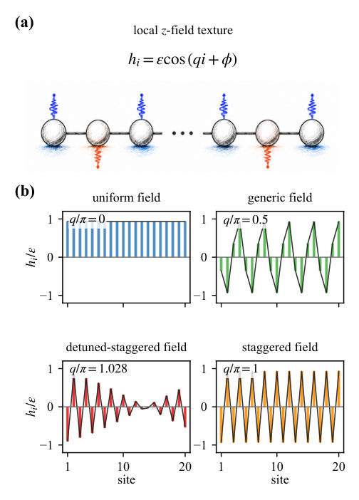
<figcaption class="paper-figure-caption"><b>Fig 1.</b> FIG. 1. Model and field textures. (a) Schematic of the structured longitudinal z-field hi applied to a clean U(1)- conserving XXZ chain. The upward blue and downward red arrows indicate the sign and spatial pattern of the local field bias; q sets its wave number, ϵ its amplitude, and ϕ a fixed offset relative to the open-chain boundaries. Because the per- turbation is longitudinal, it preserves total Sz. (b) Repre- sentative N = 20 field textures used throughout this work: uniform field (q = 0, same sign and magnitude on all sites), generic field (q/π = 0.5, non-staggered spatial modulation), detuned-staggered field (shown here with q/π = 1.028, near- staggered but incommensurate), and...</figcaption>
</figure>
<figure class="paper-figure-card">
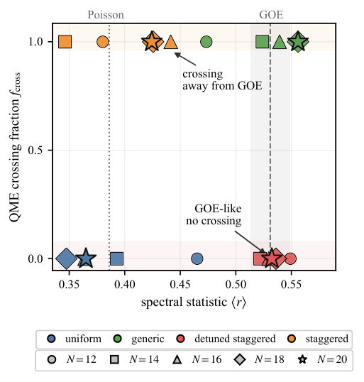
<figcaption class="paper-figure-caption"><b>Fig 2.</b> FIG. 3. Selective relation between spectral chaos and raw quantum-Mpemba crossings. Each point combines ⟨r⟩and fcross for the same Hamiltonian at fixed ϵ = 1. Colors denote field texture and markers denote system size; all four textures are included at N = 20. Detuned-staggered fields remain without sustained crossings even in the GOE-like regime, while staggered fields cross away from it. Symmetry reso- lution and clean-window checks are detailed in the Supple- mental Material, Sec. S3 [50].</figcaption>
</figure>
<figure class="paper-figure-card">
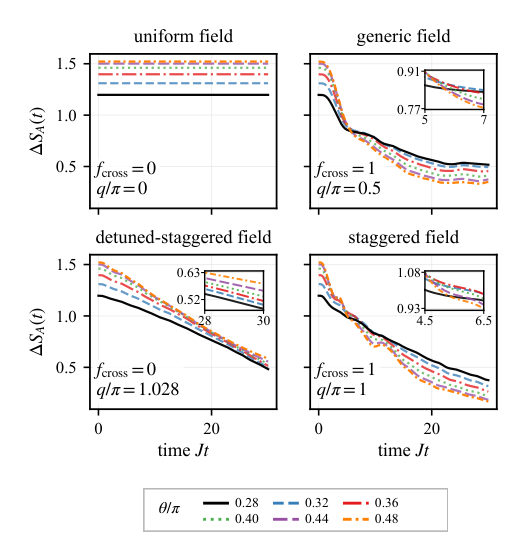
<figcaption class="paper-figure-caption"><b>Fig 3.</b> FIG. 2. Representative N = 20 entanglement-asymmetry dynamics. Lines correspond to tilted ferromagnetic product states with the six initial angles indicated by the discrete color legend; all four panels use the exchange-scale field strength ϵ = 1. The generic and staggered fields have fcross = 1, while the detuned-staggered control has fcross = 0. The insets magnify the crossing windows in the generic and staggered panels and the late-time window where the detuned-staggered curves are closest but remain ordered.</figcaption>
</figure>
<figure class="paper-figure-card">

<figcaption class="paper-figure-caption"><b>Fig 4.</b> Figure 3 compares the spectral and QME responses at fixed ϵ = 1. The raw crossing response is texture- selective, not controlled by a universal threshold in ⟨r⟩: generic and staggered textures form the crossing class, while uniform and detuned-staggered textures do not. These classes nevertheless overlap spectrally. The generic and detuned-staggered sets both include GOE-like spec- tra despite opposite crossing responses, and the stag- gered set crosses away from the GOE reference. The generic texture therefore provides a positive structured- field benchmark and the detuned-staggered texture the corresponding negative control. No single ⟨r⟩separates the two responses; the field texture...</figcaption>
</figure>
<figure class="paper-figure-card">
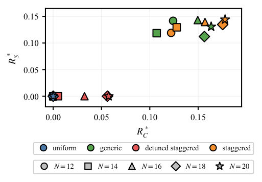
<figcaption class="paper-figure-caption"><b>Fig 5.</b> FIG. 4. Local charge-coherence inversion versus entropic or- dering. Each point combines R∗ C and R∗ S for the same Hamil- tonian at fixed ϵ = 1; colors denote texture and markers de- note size. Uniform points lie at the origin, generic and stag- gered points are nonzero on both axes, and detuned-staggered points retain R∗ S = 0 as R∗ C grows. Total charge-coherence inversion is therefore not sufficient for an entanglement- asymmetry Mpemba crossing.</figcaption>
</figure>
</div>

<p><strong>Summary.</strong> This theoretical work examines the relationship between spectral chaos and the quantum Mpemba effect in a spin chain model. The authors demonstrate that while spectral statistics can be calculated, they fail to predict whether an initial local ordering reversal (Mpemba crossing) will occur. Instead, the crossing behavior is shown to depend specifically on how local charge-sector coherence evolves within the reduced density matrix.</p>
<p><strong>Why it may be interesting.</strong> It provides a detailed, quantitative separation between global spectral properties (chaos) and local, state-dependent dynamics (coherence flow), which is crucial for understanding non-equilibrium quantum thermalization.</p>
<details>
<summary>Detailed structure</summary>
<p><strong>Main problem.</strong> The study investigates whether spectral chaos, diagnosed by level statistics, is a sufficient condition to determine the occurrence of a quantum Mpemba crossing during symmetry restoration.</p>
<p><strong>Main result.</strong> Spectral chaos alone does not dictate the existence of Mpemba crossings; instead, the crossing response is governed by how local charge-sector coherence enters the reduced density matrix.</p>
<p><strong>Method.</strong> The authors compare two distinct diagnostics—global spectral level statistics (adjacent-gap ratio) against state-resolved measures like entanglement asymmetry and charge-sector coherence inversion depth.</p>
<p><strong>Model / system.</strong> The system analyzed is a clean U(1)-conserving spin chain, modeled by an XXZ Hamiltonian perturbed by a longitudinal field texture ($h_i = \epsilon \cos(qi + \phi)$).</p>
<p><strong>Key observables.</strong> Quantum Mpemba Crossing fraction ($f_{cross}$), Entanglement Asymmetry ($\Delta S_A$), and the adjacent-gap ratio ($\langle r 
angle$).</p>
<p><strong>Important parameters / regimes.</strong> System size $N$ (up to 20), field texture parameters ($q, \phi$), and time evolution duration $T$.</p>
<p><strong>Assumptions / limitations.</strong> The analysis compares results across various field textures (generic vs. detuned-staggered) to isolate the controlling physical mechanism.</p>
<p><strong>Figures summary.</strong> Figures compare $\langle r 
angle$ against $f_{cross}$ for different field types, showing that distinct patterns emerge depending on whether the coherence or asymmetry is tracked.</p>
<p><strong>Paper structure.</strong> The paper systematically compares three diagnostics ($\langle r 
angle$, total coherence $C_A(t)$, and entropy-weighted asymmetry $\Delta S_A$) across various field textures to establish a hierarchy of control over the Mpemba crossing phenomenon.</p>
</details>
<details>
<summary>Abstract</summary>
<p>In a symmetry-restoration quantum Mpemba effect, an initial state with stronger local symmetry breaking can lose that memory faster than a state that starts closer to the symmetric manifold. We test whether this local ordering reversal is organized by chaotic thermalization in a clean U(1)-conserving spin chain, comparing spectral level statistics with crossings of the entanglement asymmetry for the same Hamiltonians. We find that Gaussian orthogonal ensemble (GOE)-like level statistics alone do not determine whether Mpemba crossings occur. Across field textures, GOE-like spectra can occur with or without entanglement-asymmetry crossings, and crossings can also appear away from the GOE reference. A near-staggered detuned control further shows that even an inversion of the total charge-sector coherence need not produce an entanglement-asymmetry crossing. Thus the crossing response is controlled not by spectral chaos alone, but by how local charge-sector coherence enters the reduced density matrix.</p>
</details>
<p><sub><a href="#top">↑ back to top</a></sub></p>

<p><a id="paper-2607.07325"></a></p>
<h3 id="taming-nonlinear-energy-diffusion-the-case-of-time-crystal-energy-condensates"><a href="http://arxiv.org/abs/2607.07325v1">Taming nonlinear energy diffusion: The case of time-crystal energy condensates</a></h3>
<p><strong>Authors:</strong> P. I. Hurtado, G. Cortés-Guillén<br>
<strong>Type:</strong> theory · <strong>Category:</strong> statistical mechanics · <strong>PDF:</strong> <a href="https://arxiv.org/pdf/2607.07325v1">https://arxiv.org/pdf/2607.07325v1</a><br>
<strong>Analysis basis:</strong> full PDF text, analyzed in chunks
<strong>Topic relevance:</strong> 🔥 <code>driven-dissipative phase transition</code> <strong>4/5</strong> · <code>methods for driven-dissipative</code> <strong>3/5</strong> · <code>non-equilibrium dynamics</code> <strong>3/5</strong> · <code>non-equilibrium universality</code> <strong>3/5</strong> · <code>analog quantum simulation</code> <strong>2/5</strong> · <code>Frenkel-Kontorova</code> <strong>1/5</strong> · <code>Keldysh / 2PI / non-Gaussian methods</code> <strong>1/5</strong> · <code>correlated / nonlocal dissipation</code> <strong>1/5</strong></p>
<div class="figure-strip-hint">↔ Scroll figures horizontally</div>
<div class="paper-figures-scroll">
<figure class="paper-figure-card">
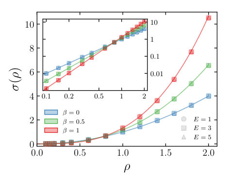
<figcaption class="paper-figure-caption"><b>Fig 1.</b> FIG. 1. Main panel: Mobility transport coefficient σ(ρ) as a function of the density, measured in kinetic Monte Carlo simulations of the driven nonlinear energy diffu- sion model on a periodic 1d lattice with L = 200 sites. Different symbols correspond to external fields E = 1 (⃝), E = 3 (□) and E = 5 (△), while different colors indicate the nonlinearity exponent β = 0, 0.5 and 1. In- set: the same data in log-log scale, to highlight the power law behavior σ(ρ) ∼ρβ+2.</figcaption>
</figure>
<figure class="paper-figure-card">
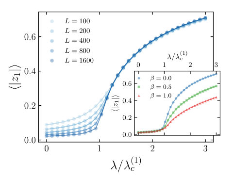
<figcaption class="paper-figure-caption"><b>Fig 2.</b> FIG. 2. Main: Packing order parameter ⟨|z1|⟩as a func- tion of the reduced coupling λ/λ(1) c measured in simula- tions for β = 0, ρ0 = 1/3, E0 = 10 and different values of L. Inset: ⟨|z1|⟩vs λ/λ(1) c measured for L = 1600, vary- ing β = 0, 0.5, 1.0 and the same ρ0 = 1/3 and E0 = 10. Error bars smaller than symbol sizes in all cases.</figcaption>
</figure>
<figure class="paper-figure-card">
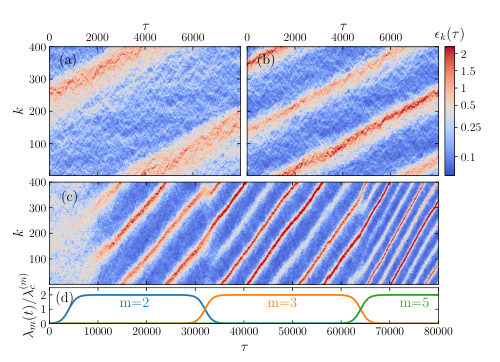
<figcaption class="paper-figure-caption"><b>Fig 3.</b> FIG. 4. Spatiotemporal raster plots illustrating the dy- namics of the energy field for the nonlinear energy dif- fusion model driven by different packing fields. All pan- els correspond to steady-state trajectories for ρ0 = 1/3, β = 0 and L = 400. Panels (a) and (b) show the system response to m = 1, 2 packing fields, respectively, with reduced coupling λ/λ(m) c = 2 for constant field E0 = 20. Panel (c) displays the system response to a dynamic su- perposition of different packing fields, see Eq. (32), with reduced amplitudes modulated in time as shown in panel (d), for E0 = 10.</figcaption>
</figure>
<figure class="paper-figure-card">
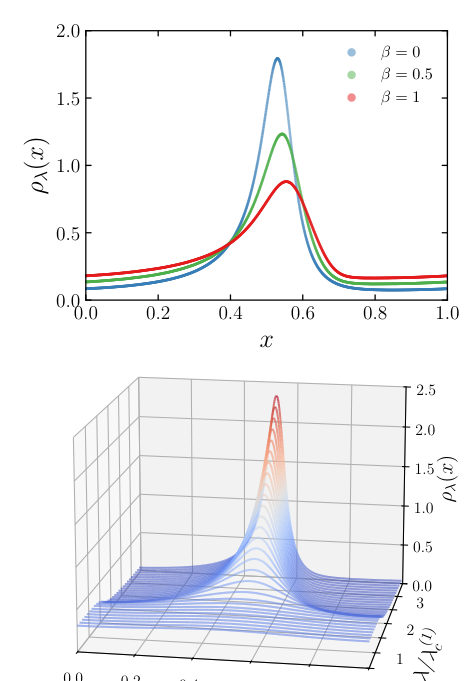
<figcaption class="paper-figure-caption"><b>Fig 4.</b> FIG. 3. Top panel: Average energy density field ρλ(x) around the center of mass for supercritical coupling λ/λ(1) c = 2.379 and different nonlinearity exponents β = 0, 0.5, 1.0, as measured in simulations for L = 1600, ρ0 = 1/3 and E0 = 10. Error bars are smaller than sym- bol sizes. Bottom panel: Evolution of the average energy density field (centered around the instantaneous center of mass) with the reduced coupling λ/λ(1) c measured for β = 0, L = 800, ρ0 = 1/3 and E0 = 10.</figcaption>
</figure>
</div>

<p><strong>Summary.</strong> This paper develops a theoretical framework to study nonlinear energy diffusion driven internally within a many-body system, using a modified KMP model. By applying an engineered bulk driving field, the authors show they can actively control energy transport and induce stable, time-crystalline condensates. This offers a powerful tool for understanding and engineering non-equilibrium dynamics in complex physical media.</p>
<p><strong>Why it may be interesting.</strong> The connection between controlled non-equilibrium driving (the 'packing field') and the emergence of long-range temporal order (time crystals) provides a powerful analogy for engineering coherent quantum states or controlling dissipation in open quantum systems.</p>
<details>
<summary>Detailed structure</summary>
<p><strong>Main problem.</strong> The study focuses on controlling nonlinear energy diffusion in stochastic many-body systems by implementing a bulk driving mechanism, moving beyond traditional boundary-driven approaches.</p>
<p><strong>Main result.</strong> The work demonstrates that appropriately designed external fields can induce the spontaneous formation of traveling energy condensates exhibiting robust long-range temporal order, characteristic of continuous time crystals.</p>
<p><strong>Method.</strong> The analysis derives the hydrodynamic description from a microscopic master equation using a local equilibrium approximation and validates findings via kinetic Monte Carlo simulations.</p>
<p><strong>Model / system.</strong> The system is a bulk-driven nonlinear variant of the Kipnis-Marchioro-Presutti (KMP) model for stochastic energy diffusion on a 1D lattice, where collisions are biased to induce a net energy flow in the bulk.</p>
<p><strong>Key observables.</strong> Energy current, diffusivity $D(
ho)$, mobility $\sigma(
ho)$, and the formation/evolution of traveling energy condensates.</p>
<p><strong>Important parameters / regimes.</strong> The external driving field strength ($\chi$ or $E$), local energy density ($
ho$), and parameters controlling the packing fields ($\lambda_m$).</p>
<p><strong>Assumptions / limitations.</strong> The derivation relies on the local equilibrium approximation, and the hydrodynamic limit ($L 	o \infty$) is taken for macroscopic descriptions.</p>
<p><strong>Figures summary.</strong> Figures illustrate condensate profile evolution under varying driving strengths ($eta$), showing critical points signaling structure emergence, and spatiotemporal raster plots demonstrating steady-state trajectories with multiple packing fields applied.</p>
<p><strong>Paper structure.</strong> The paper progresses from establishing the microscopic master equation for bulk-driven diffusion to deriving macroscopic transport coefficients via local equilibrium approximation. It then applies this framework to show how engineered driving fields can stabilize time-crystalline phases, culminating in a discussion of systematic control over energy dynamics.</p>
</details>
<details>
<summary>Abstract</summary>
<p>We study a bulk-driven nonlinear variant of the Kipnis-Marchioro-Presutti model of stochastic energy diffusion in which local collisions are biased to induce a net energy flow, resembling the effect of an external field. Starting from the microscopic master equation, we derive the hydrodynamic description of the driven system via a local equilibrium approximation, obtaining explicit expressions for the energy current and the associated diffusivity and mobility transport coefficients, which are nonlinear functions of the local energy density. We test our findings in kinetic Monte Carlo simulations of the model and, as a proof of concept, we demonstrate the versatility of this driving mechanism to control nonlinear energy transport by inducing time-crystalline phases. In particular, we show that appropriately designed packing fields induce the spontaneous formation of traveling energy condensates, exhibiting robust long-range temporal order reminiscent of continuous time crystals. Our results provide a simple yet powerful framework to study bulk-driven nonlinear energy diffusion in stochastic many-body systems, offering a bridge between microscopic dynamics, macroscopic transport, and controlled spatiotemporal order.</p>
</details>
<p><sub><a href="#top">↑ back to top</a></sub></p>

<p><a id="paper-2607.07449"></a></p>
<h3 id="turing-mechanisms-in-a-multimode-open-quantum-system"><a href="http://arxiv.org/abs/2607.07449v1">Turing mechanisms in a multimode open quantum system</a></h3>
<p><strong>Authors:</strong> Giorgia Comparato, Francesco Gargano, Rosario Lo Franco<br>
<strong>Type:</strong> theory · <strong>Category:</strong> statistical mechanics · <strong>PDF:</strong> <a href="https://arxiv.org/pdf/2607.07449v1">https://arxiv.org/pdf/2607.07449v1</a><br>
<strong>Analysis basis:</strong> full PDF text, analyzed in chunks
<strong>Topic relevance:</strong> 🔥 <code>driven-dissipative phase transition</code> <strong>4/5</strong> · <code>correlated / nonlocal dissipation</code> <strong>3/5</strong> · <code>methods for driven-dissipative</code> <strong>3/5</strong> · <code>non-equilibrium dynamics</code> <strong>3/5</strong> · <code>non-equilibrium universality</code> <strong>2/5</strong> · <code>Frenkel-Kontorova</code> <strong>1/5</strong> · <code>Keldysh / 2PI / non-Gaussian methods</code> <strong>1/5</strong> · <code>analog quantum simulation</code> <strong>1/5</strong></p>
<div class="figure-strip-hint">↔ Scroll figures horizontally</div>
<div class="paper-figures-scroll">
<figure class="paper-figure-card">
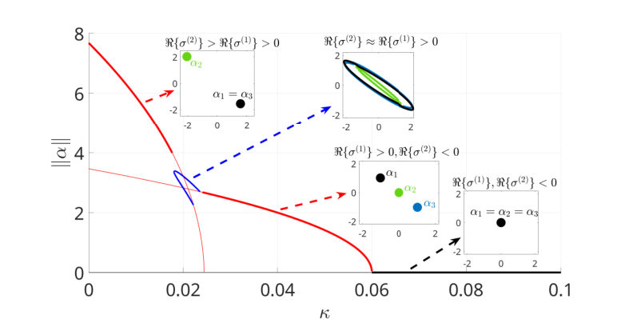
<figcaption class="paper-figure-caption"><b>Fig 1.</b> Figure 1. Bifurcation diagram of the deterministic model of Eq. (6) for N = 3 sites, obtained by numerical continuation in the parameter κ in the squeezing-dominant regime η ≥|∆|/2. System parameters: ∆= 0.05, γ1 = 0.03, γ2 = 0.005, θ = π, η = 0.025, λ = 0.08. The vertical axis represents the norm ∥α∥of the stationary solution. Thick (thin) black lines denote stable (unstable) null equilibrium, whereas red curves represent stationary non–homogeneous solutions emerging via Turing instability. The blue branch indicates a time–periodic (oscillatory) spatial pattern arising when two non-uniform eigenmodes have similar positive growth rates. The inset shows representative spatial configurations...</figcaption>
</figure>
<figure class="paper-figure-card">
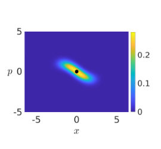
<figcaption class="paper-figure-caption"><b>Fig 2.</b> Figure 2. Reduced Wigner functions in the phase space (x, p) = (Re{α}, Im{α}) for the three–site quantum system in the absence of nonlocal couplings (λ = κ = 0). Since the sites are dynamically decoupled, the reduced Wigner functions coincide, W1 = W2 = W3. The parameters are ∆= 0.05, γ1 = 0.03, γ2 = 0.005, θ = π, and η = 0.025. The black dot marks the homogeneous null solution for the deterministic model.</figcaption>
</figure>
<figure class="paper-figure-card">
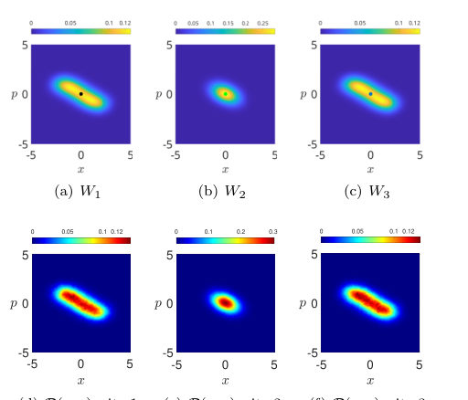
<figcaption class="paper-figure-caption"><b>Fig 3.</b> Figure 3. (a)-(c) Reduced Wigner functions for the three- site quantum system for the system parameters ∆= 0.05, γ1 = 0.03, γ2 = 0.005, θ = π, η = 0.025, λ = 0.08, κ = 0.08, corresponding to the stable homogeneous stationary branch of the deterministic bifurcation diagram in Fig. 1. The distributions W1 and W3 almost coincide and exhibit a barely visible bimodal structure precursor of the nearby patterned solution obtained for lower values of κ. The distribution function W2 remains unimodal and concentrated at α2 = 0. (d)-(f) Density distributions P(x, p) derived from the SDE for each site.</figcaption>
</figure>
<figure class="paper-figure-card">
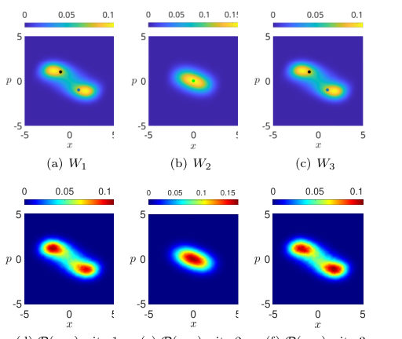
<figcaption class="paper-figure-caption"><b>Fig 4.</b> Figure 4. (a)-(c) Reduced Wigner functions for the three- site quantum system for the system parameters ∆= 0.05, γ1 = 0.03, γ2 = 0.005, θ = π, η = 0.025, λ = 0.08, κ = 0.04, corresponding to the first non-uniform stationary branch of the deterministic bifurcation diagram in Fig. 1. The distributions W1 and W3 almost coincide and exhibit a bimodal structure with peaks located near the deterministic stationary values α1 = −α3 = ±(−1+1i), reflecting the underlying Z2 symmetry of the dynamics. The reduced Wigner function W2 remains unimodal and centered at α2 = 0. The deterministic values are represented by the black, green, and blue dots. (d)-(f) Density distributions P(x, p) derived from the...</figcaption>
</figure>
<figure class="paper-figure-card">
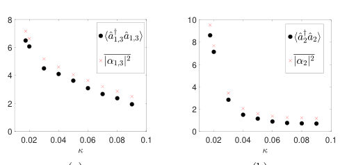
<figcaption class="paper-figure-caption"><b>Fig 5.</b> Figure 6. (a) The quantum mean phonon number for sites 1 and 3 (denoted by ⟨ˆa† 1,3ˆa1,3⟩, black dots) plotted alongside the semiclassical averaged squared amplitude determined from the SDE (|α1,3|2, red crosses). (b) A similar comparison for site 2. In both cases, the numerical results show a constant shift of approximately 1/2, confirming that the SDE provides a good approximation of the full QME in the weak quantum regime. The fixed parameters used for the simulations are ∆= 0.05, γ1 = 0.03, γ2 = 0.005, θ = π, η = 0.025, and λ = 0.08, while κ is varied.</figcaption>
</figure>
</div>

<p><strong>Summary.</strong> This paper analyzes pattern formation in an open quantum system modeled as a bosonic chain subject to local and nonlocal dissipation. By deriving mean-field equations from the GKSL master equation, the authors show that Turing instabilities can emerge, allowing for the selection of stable spatial patterns. This connects nonlinear dynamics theory with dissipative quantum mechanics.</p>
<p><strong>Why it may be interesting.</strong> This work provides a crucial theoretical bridge by demonstrating how classical pattern formation mechanisms (Turing instabilities) can be rigorously mapped onto the dynamics of open quantum systems, which is highly relevant for understanding dissipative quantum matter.</p>
<details>
<summary>Detailed structure</summary>
<p><strong>Main problem.</strong> The study investigates pattern formation, specifically Turing instabilities, within a multimode open quantum system.</p>
<p><strong>Main result.</strong> The analysis successfully extends the concept of Turing instability and mode competition to open quantum systems, showing that spatial self-organization can emerge from dissipative quantum dynamics.</p>
<p><strong>Method.</strong> The approach involves deriving mean-field equations for field amplitudes ($\langle \hat{a}_j 
angle$) from the full GKSL master equation, followed by linear stability analysis of these resulting reaction-diffusion-like systems.</p>
<p><strong>Model / system.</strong> The system is a finite chain of bosonic modes (at least three sites) whose dynamics are governed by a GKSL master equation incorporating local parametric driving and both short-range ($\lambda$) and long-range ($\kappa$) nonlinear dissipative couplings.</p>
<p><strong>Key observables.</strong> Field amplitudes ($\alpha_j$), reduced Wigner functions, and the stability eigenvalues of the linearized system.</p>
<p><strong>Important parameters / regimes.</strong> Nonlocal coupling strengths ($\lambda, \kappa$), detuning ($\Delta$), and parametric drive ($\eta$).</p>
<p><strong>Assumptions / limitations.</strong> The analysis relies on deriving a semiclassical mean-field approximation from the full quantum master equation; comparisons are made between this deterministic limit and the full quantum evolution.</p>
<p><strong>Paper structure.</strong> The paper progresses by defining the complex open quantum system dynamics via the GKSL master equation, deriving the corresponding reaction-diffusion mean-field equations, performing linear stability analysis to identify Turing instability conditions, and finally comparing these deterministic results with full quantum simulations using Wigner functions.</p>
</details>
<details>
<summary>Abstract</summary>
<p>We investigate pattern formation in a finite chain of bosonic modes whose dynamics is governed by a Gorini-Kossakowski-Sudarshan-Lindblad (GKSL) master equation. The model combines local parametric driving and nonlinear damping with nonlocal dissipative couplings between modes that work on different discrete spatial scales. In the classical limit, these mechanisms generate a reaction-diffusion-like dynamics, allowing the emergence of Turing-type instabilities. The key aspect of the analysis is the coexistence and competition of different unstable spatial modes. Depending on the range of parameters, the system may select different stationary nonuniform configurations, oscillatory wave-like states, or regimes in which multiple modes interact before a dominant pattern is established, thus providing a mechanism for pattern selection. We compare the deterministic bifurcation scenario, generated by a reaction-diffusion-like system derived from semiclassical drift dynamics, with the quantum dynamics, derived via the GKSL master equation, using phase-space methods and reduced Wigner functions. The results show how Turing instabilities, mode competition, and pattern selection can be extended to multimode open quantum systems, providing a bridge between nonlinear dynamical systems, dissipative quantum mechanics, and spatial self-organization.</p>
</details>
<p><sub><a href="#top">↑ back to top</a></sub></p>

<p><a id="paper-2607.07113"></a></p>
<h3 id="density-induced-reentrant-coarsening-in-a-two-temperature-system"><a href="http://arxiv.org/abs/2607.07113v1">Density-Induced Reentrant Coarsening in a Two-Temperature System</a></h3>
<p><strong>Authors:</strong> Partha Sarathi Mondal, Anish Kumar, Nayana Venkatareddy, Prabal K. Maiti, Shradha Mishra<br>
<strong>Type:</strong> theory · <strong>Category:</strong> statistical mechanics · <strong>PDF:</strong> <a href="https://arxiv.org/pdf/2607.07113v1">https://arxiv.org/pdf/2607.07113v1</a><br>
<strong>Analysis basis:</strong> full PDF text, analyzed in chunks
<strong>Topic relevance:</strong> 🔥 <code>non-equilibrium dynamics</code> <strong>4/5</strong> · 🔥 <code>non-equilibrium universality</code> <strong>4/5</strong> · <code>driven-dissipative phase transition</code> <strong>3/5</strong> · <code>methods for driven-dissipative</code> <strong>3/5</strong> · <code>Keldysh / 2PI / non-Gaussian methods</code> <strong>1/5</strong> · <code>analog quantum simulation</code> <strong>1/5</strong> · <code>correlated / nonlocal dissipation</code> <strong>1/5</strong></p>
<div class="figure-strip-hint">↔ Scroll figures horizontally</div>
<div class="paper-figures-scroll">
<figure class="paper-figure-card">
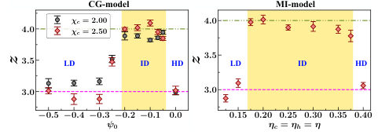
<figcaption class="paper-figure-caption"><b>Fig 1.</b> FIG. 1. The variation of the late time growth exponent zLT from the CG-model in (a) and the MI-model in (b).</figcaption>
</figure>
<figure class="paper-figure-card">
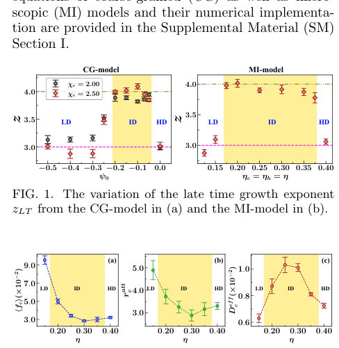
<figcaption class="paper-figure-caption"><b>Fig 2.</b> FIG. 2. Average fraction of cold particles outside the clus- ters, ⟨fc⟩in (a), average attachment rate of cold particles from outside the clusters to the cluster interface, ratt c in (b), and effective diffusivity Deff c in (c) as functions of the packing fraction η obtained from microscopic simulations.</figcaption>
</figure>
<figure class="paper-figure-card">
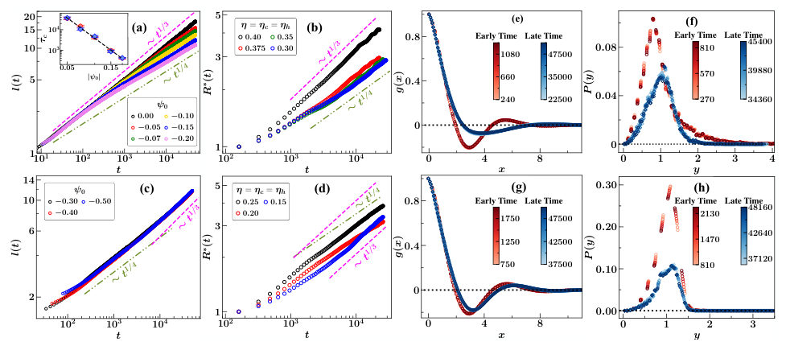
<figcaption class="paper-figure-caption"><b>Fig 3.</b> FIG. 3. (a) l(t) vs. t from the CG-model for different off-criticalities ψ0 at χc = 2.50 in the HD →ID regime. (Inset) Crossover time τc vs. |ψ0|; dashed line indicates the power-law fit τc ∼|ψ0|3.30; (b) R∗(t) vs. t from the MI-model for different densities at χm = 16.60 in the HD →ID regime; (c) l(t) vs. t from the CG-model for various ψ0 at χc = 2.00 in the ID →LD regime; (d) R∗(t) vs. t from the MI-model for different densities at χm = 16.60 in the ID →LD regime. The standard deviation in the value of l(t) and R∗(t) obtained over independent realizations is of the size of the symbols in the respective cases. Scaled two-point correlation function g(x) vs x = r/l(t) [(e),(g)] and scaled...</figcaption>
</figure>
<figure class="paper-figure-card">
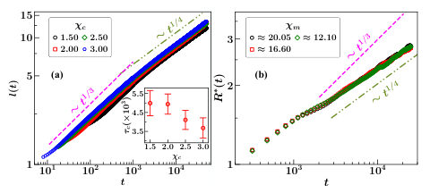
<figcaption class="paper-figure-caption"><b>Fig 4.</b> FIG. 4. (a) Plot of l(t) vs. t plot for different activity χc from the CG-model at ψ0 = −0.10 in the ID regime. (inset) plot of crossover time τc vs. activity χc; (b) shows the R∗(t) vs. t for different activity χm from the MI-model at η = 0.30 in the ID regime. The rest of the parameters for the CG and MI models are the same as in Fig.3.</figcaption>
</figure>
<figure class="paper-figure-card">
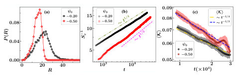
<figcaption class="paper-figure-caption"><b>Fig 5.</b> FIG. 5. Comparison of morphological characteristics from the CG-model for different off-criticality ψ0 = −0.20, and −0.50 for activity χ = 2.00. (a) shows the plot of cluster size distribution P(R) vs. R. (b) shows time evolution of S−1 v . Panel (c) shows the time evolution of mean curvature ⟨K⟩. The rest of the parameters for the CG and MI models are the same as in Fig.3.</figcaption>
</figure>
</div>

<p><strong>Summary.</strong> This work analyzes phase separation kinetics in a two-temperature system, revealing that the coarsening rate depends critically on particle density. The study finds a reentrant behavior where the growth exponent changes from $t^{1/3}$ to $t^{1/4}$ and back, dictated by whether transport is limited by diffusion or attachment kinetics.</p>
<p><strong>Why it may be interesting.</strong> The concept of density controlling the universality class of domain growth in a non-equilibrium setting provides insights into how external parameters can fundamentally alter many-body dynamics, which is relevant for understanding driven quantum systems.</p>
<details>
<summary>Detailed structure</summary>
<p><strong>Main problem.</strong> The study investigates how non-equilibrium driving modifies phase-separation kinetics, specifically focusing on density control over domain coarsening pathways.</p>
<p><strong>Main result.</strong> The system exhibits a striking density-induced reentrant coarsening behavior, where the growth exponent cycles through $t^{1/3} 
ightarrow t^{1/4} 
ightarrow t^{1/3}$ as density changes.</p>
<p><strong>Method.</strong> The research employs both coarse-grained field-theoretic modeling and microscopic Brownian dynamics simulations to analyze domain evolution.</p>
<p><strong>Model / system.</strong> The system is a two-temperature mixture undergoing phase separation, modeled using coupled dynamics for 'hot' and 'cold' species. The analysis tracks the interplay between particle diffusivity, availability, and attachment kinetics.</p>
<p><strong>Key observables.</strong> Characteristic domain size growth law $L(t) \sim t^{1/z}$, structure factor $S(k, t)$, and various transport metrics like effective diffusivity ($D_{	ext{eff}, c}$) and attachment rate ($ ext{ratt}_c$).</p>
<p><strong>Important parameters / regimes.</strong> Density ($\psi_0$) acts as the key control parameter, defining three distinct regimes: High Density (HD), Intermediate Density (ID), and Low Density (LD).</p>
<p><strong>Assumptions / limitations.</strong> The analysis is primarily conducted in an overdamped limit; future work may incorporate inertial effects.</p>
<p><strong>Figures summary.</strong> Figures illustrate the reentrant growth exponent dependence on density, showing distinct scaling regimes for correlation functions and cluster statistics corresponding to different physical mechanisms (diffusion-limited vs. attachment-rate limited).</p>
<p><strong>Paper structure.</strong> The paper systematically analyzes coarsening kinetics across varying densities, identifying three distinct transport-governed regimes (HD $
ightarrow$ ID $
ightarrow$ LD) that dictate the growth exponent sequence.</p>
</details>
<details>
<summary>Abstract</summary>
<p>Understanding how nonequilibrium driving modifies phase-separation kinetics remains a fundamental challenge. Here we show that phase separation in a two-temperature system exhibits a striking density-induced reentrant coarsening behavior. Using Brownian dynamics simulations and a coarse-grained field-theoretic model, we find that the characteristic domain size grows as $L(t)\sim t^{1/z}$, displaying a reentrant sequence $(t^{1/3} \rightarrow t^{1/4}\rightarrow t^{1/3})$ with increasing density. While the low- and high-density regimes are governed by classical curvature-driven bulk diffusion, the intermediate-density regime exhibits anomalously slow growth. We show that this slowdown originates from a transport bottleneck arising from the interplay of particle diffusivity, particle availability, and attachment kinetics, which suppresses the effective mass flux between domains. Unlike equilibrium phase separation, where density primarily affects morphology and crossover scales, the two-temperature drive renders density a key control parameter for coarsening pathways. Our results uncover a nonequilibrium mechanism for anomalous domain growth in two-temperature systems.</p>
</details>
<p><sub><a href="#top">↑ back to top</a></sub></p>

<p><a id="paper-2607.07560"></a></p>
<h3 id="does-born-rule-imply-unitarity-of-time-evolution-in-quantum-mechanics"><a href="http://arxiv.org/abs/2607.07560v1">Does Born Rule Imply Unitarity of Time Evolution in Quantum Mechanics?</a></h3>
<p><strong>Authors:</strong> Ali Mostafazadeh<br>
<strong>Type:</strong> theory · <strong>Category:</strong> other · <strong>PDF:</strong> <a href="https://arxiv.org/pdf/2607.07560v1">https://arxiv.org/pdf/2607.07560v1</a><br>
<strong>Analysis basis:</strong> full PDF text, analyzed in chunks
<strong>Topic relevance:</strong> 🔥 <code>quantum measurements</code> <strong>4/5</strong> · <code>measurement-induced transitions</code> <strong>3/5</strong> · <code>driven-dissipative phase transition</code> <strong>2/5</strong> · <code>Keldysh / 2PI / non-Gaussian methods</code> <strong>1/5</strong> · <code>Kondo &amp; dissipative impurity</code> <strong>1/5</strong> · <code>analog quantum simulation</code> <strong>1/5</strong> · <code>correlated / nonlocal dissipation</code> <strong>1/5</strong> · <code>entanglement &amp; information structure</code> <strong>1/5</strong> · <code>methods for driven-dissipative</code> <strong>1/5</strong> · <code>non-equilibrium dynamics</code> <strong>1/5</strong></p>
<div class="figure-strip-hint">↔ Scroll figures horizontally</div>
<div class="paper-figures-scroll">
<figure class="paper-figure-card">
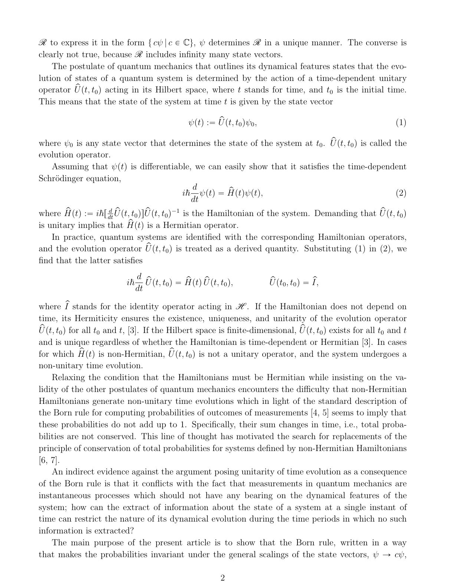
<figcaption class="paper-figure-caption"><b>Fig 1.</b> Low-resolution page preview, page 2</figcaption>
</figure>
<figure class="paper-figure-card">
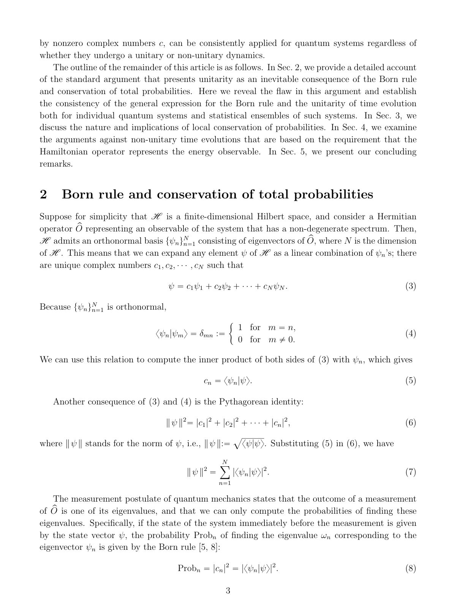
<figcaption class="paper-figure-caption"><b>Fig 2.</b> Low-resolution page preview, page 3</figcaption>
</figure>
<figure class="paper-figure-card">
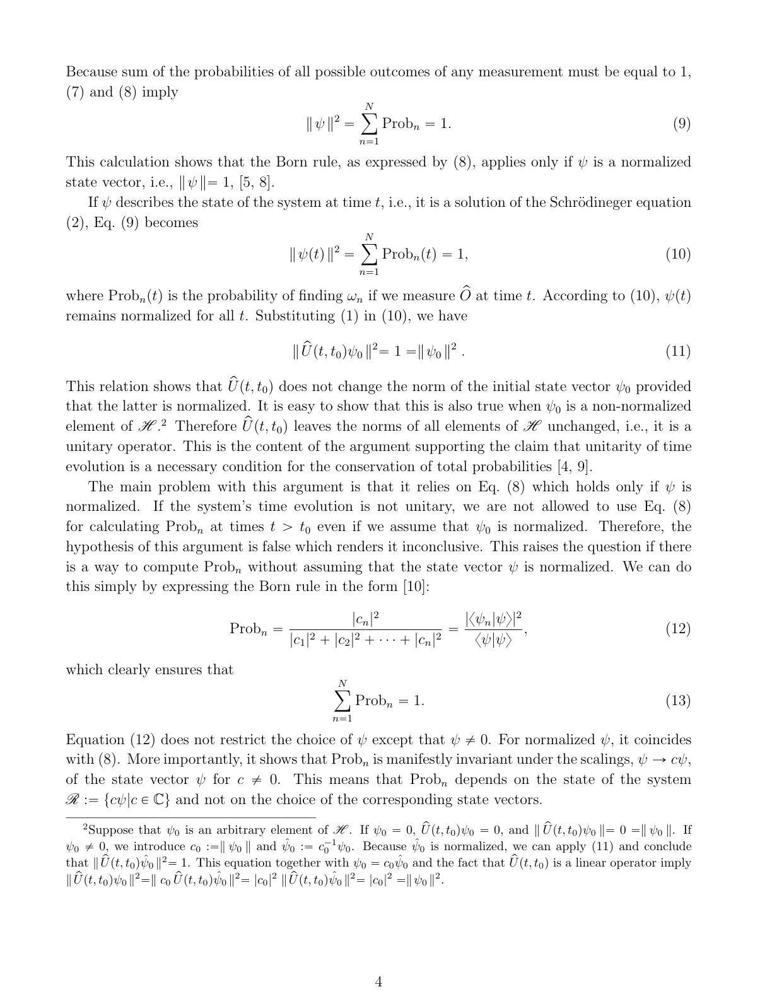
<figcaption class="paper-figure-caption"><b>Fig 3.</b> Low-resolution page preview, page 4</figcaption>
</figure>
<figure class="paper-figure-card">
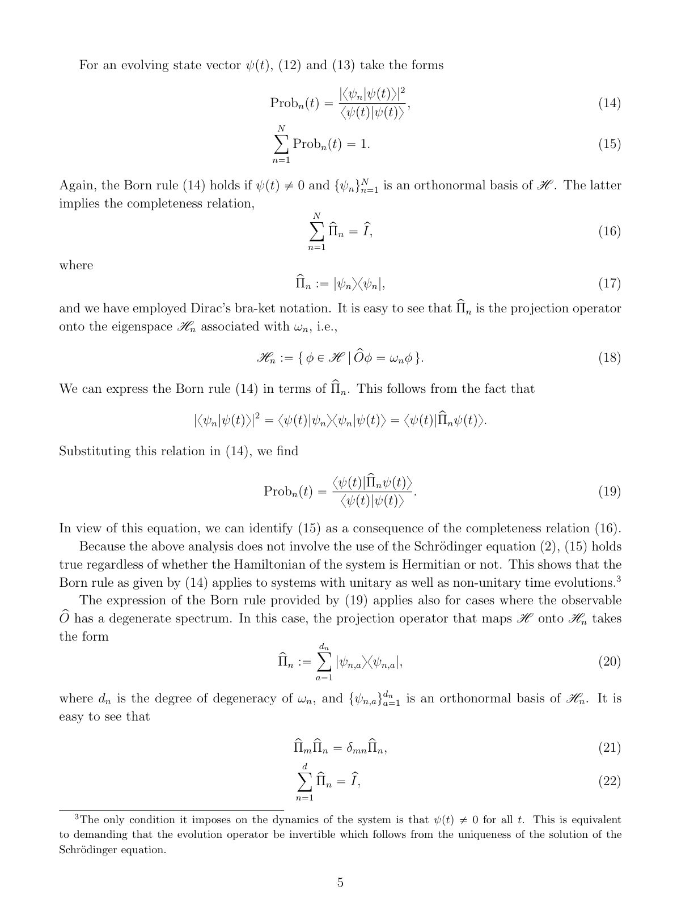
<figcaption class="paper-figure-caption"><b>Fig 4.</b> Low-resolution page preview, page 5</figcaption>
</figure>
<figure class="paper-figure-card">
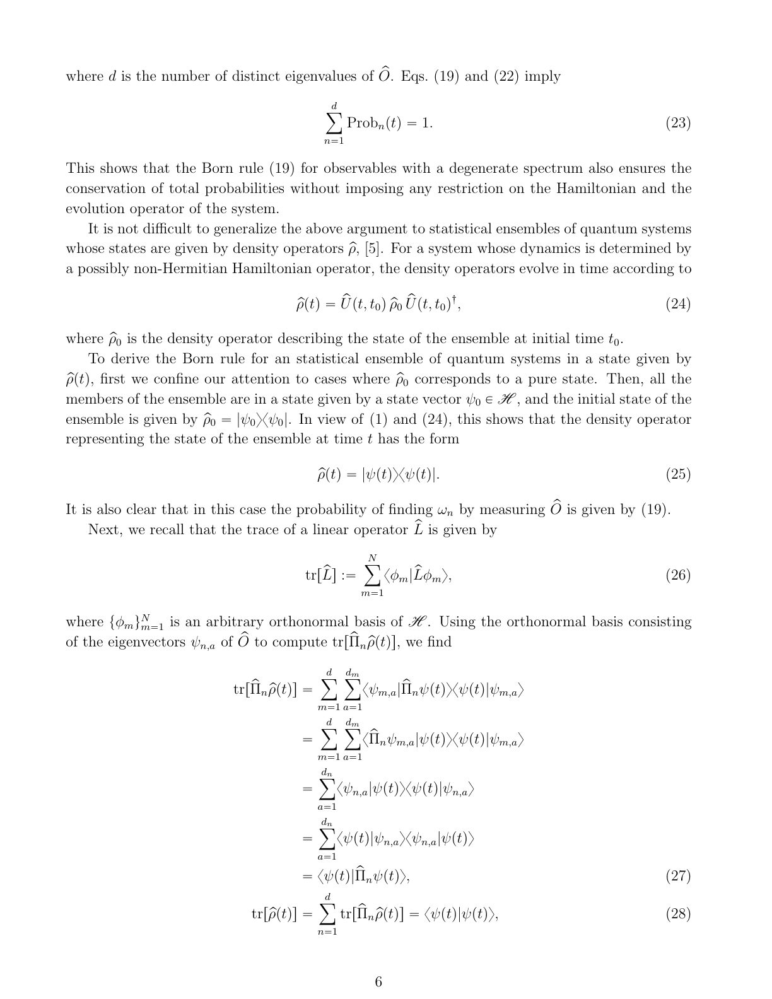
<figcaption class="paper-figure-caption"><b>Fig 5.</b> Low-resolution page preview, page 6</figcaption>
</figure>
</div>

<p><strong>Summary.</strong> This paper investigates whether the Born rule inherently requires that quantum time evolution be unitary. It demonstrates that the standard textbook argument is flawed because probability conservation can hold even for non-unitary dynamics when a generalized form of the Born rule is employed. The findings suggest a necessary distinction between local probability conservation and global probability normalization in open or non-Hermitian systems.</p>
<p><strong>Why it may be interesting.</strong> This work is highly relevant as it tackles foundational issues regarding the measurement postulate and time evolution structure, which underpin all quantum dynamics models used in AMO physics and open system descriptions.</p>
<details>
<summary>Detailed structure</summary>
<p><strong>Main problem.</strong> The central question is whether the Born rule, which governs measurement probabilities, necessitates that quantum time evolution must be unitary.</p>
<p><strong>Main result.</strong> The standard argument linking the Born rule to unitarity is flawed; probability conservation can be maintained even with non-unitary dynamics by using a generalized form of the Born rule. The requirement for local probability conservation in position space suggests Hermiticity but does not prove it.</p>
<p><strong>Method.</strong> The analysis involves deriving and comparing different forms of the Born rule for pure and mixed states, extending to non-Hermitian Hamiltonians, and analyzing continuity equations for probability densities.</p>
<p><strong>Model / system.</strong> The paper considers general quantum mechanical systems in a complex Hilbert space, ranging from pure state evolution governed by $\psi$ to ensemble dynamics described by density operators $
ho$. It examines the implications of measurement probabilities across both unitary and non-unitary time evolutions.</p>
<p><strong>Key observables.</strong> Probability of measuring eigenvalue $P_{Born}$, total probability conservation ($\sum P = 1$), localization probability density $\varrho_{px, tq}$, and expectation values of observables $\langle \psi | p_O | \psi 
angle$.</p>
<p><strong>Important parameters / regimes.</strong> The analysis is sensitive to whether the Hamiltonian is Hermitian or if the state vector/density operator is normalized.</p>
<p><strong>Assumptions / limitations.</strong> The standard argument assumes a normalized state vector ($\|\psi\|=1$) and that all physical observables must have real expectation values, which leads to assumptions about Hermiticity.</p>
<p><strong>Figures summary.</strong> Not specified in the notes; the analysis relies on mathematical derivations of probability formulas (Eq. 12, Eq. 19, Eq. 29) and continuity equations (Eq. 52).</p>
<p><strong>Paper structure.</strong> The paper progresses by first presenting the standard flawed argument linking Born rule to unitarity. It then generalizes the Born rule for non-unitary dynamics using scaling factors. Finally, it contrasts this with local conservation laws in position space, which suggest Hermiticity but are shown to be distinct from the general probability conservation.</p>
</details>
<details>
<summary>Abstract</summary>
<p>The Born rule for computing probabilities of the outcomes of measurements is an indispensable ingredient of quantum mechanics. The standard textbook description of this rule gives the impression that it implies the unitarity of time evolution. This view relies on the argument that unless the dynamics is unitary, the probabilities of finding all possible outcomes of a measurement do not add up to 1, i.e., the total probability is not conserved. We show that this argument is flawed, and that the general expression for the Born rule ensures the conservation of total probabilities even when the dynamics of a quantum system is not unitary. This applies to the dynamics of ensembles of quantum systems in both pure and mixed states. We discuss the status of the local conservation of probabilities and the arguments against the plausibility of non-unitary time evolutions that are based on the identification of the Hamiltonian operator with the energy observable.</p>
</details>
<p><sub><a href="#top">↑ back to top</a></sub></p>

<p><a id="paper-2607.07338"></a></p>
<h3 id="quantum-simulation-of-real-world-nonlinear-dynamics-via-koopman-method"><a href="http://arxiv.org/abs/2607.07338v1">Quantum simulation of real-world nonlinear dynamics via Koopman method</a></h3>
<p><strong>Authors:</strong> Baoyang Zhang, Dong An, Zhaoyuan Meng, Yefei Yu, Xiaoxiao Xiao, Zhen Lu, Yue Yang<br>
<strong>Type:</strong> both · <strong>Category:</strong> numerical methods · <strong>PDF:</strong> <a href="https://arxiv.org/pdf/2607.07338v1">https://arxiv.org/pdf/2607.07338v1</a><br>
<strong>Analysis basis:</strong> full PDF text, analyzed in chunks
<strong>Topic relevance:</strong> 🔥 <code>QC/QI experiment</code> <strong>4/5</strong> · <code>methods for driven-dissipative</code> <strong>3/5</strong> · <code>non-equilibrium dynamics</code> <strong>3/5</strong> · <code>analog quantum simulation</code> <strong>2/5</strong> · <code>driven-dissipative phase transition</code> <strong>2/5</strong> · <code>correlated / nonlocal dissipation</code> <strong>1/5</strong> · <code>non-equilibrium universality</code> <strong>1/5</strong></p>
<div class="figure-strip-hint">↔ Scroll figures horizontally</div>
<div class="paper-figures-scroll">
<figure class="paper-figure-card">
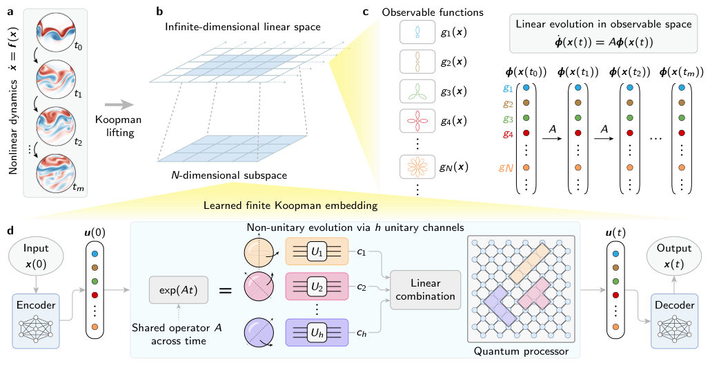
<figcaption class="paper-figure-caption"><b>Fig 1.</b> FIG. 1. Schematic of the QKM framework for simulating nonlinear dynamics on a superconducting quantum processor. a, A nonlinear dynamical system ¤𝒙= 𝒇(𝒙) generates discrete spatiotemporal snapshots 𝒙(𝑡0), 𝒙(𝑡1), · · · , 𝒙(𝑡𝑚). b, The nonlinear dynamics are mapped to an infinite-dimensional linear observable space via Koopman lifting in c, and are subsequently projected onto a finite 𝑁-dimensional subspace spanned by learned observables in d, yielding the linear evolution ¤𝒖= 𝐴𝒖. c, In full Koopman theory, this infinite-dimensional space comprises all observables 𝑔𝑗(𝒙) acting on the physical state, such that 𝝓(𝒙) = (𝑔1(𝒙), 𝑔2(𝒙), · · · )T. Although the physical field 𝒙(𝑡) evolves...</figcaption>
</figure>
<figure class="paper-figure-card">
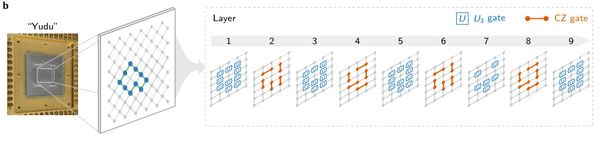
<figcaption class="paper-figure-caption"><b>Fig 2.</b> FIG. 2. Hardware-efficient quantum circuit of the QKM. a, The non-unitary propagator e𝐴𝑡for nonlinear dynamics is first reformulated as a spectral integral of diagonal unitary operators (Theorem 1). Each of the ℎindependent PQCs implements a single spectral component 𝑉(𝑘)eiΛ(𝑘)𝑡𝑉†(𝑘) of the diagonalized LCHS decomposition (Theorem 2). Each 𝑛-qubit circuit comprises two functional blocks. The state- preparation block utilizes 𝑅alternating layers of parameterized 𝑈3 gates with rotation angles {𝛼𝑗,𝑙,ℓ, 𝛽𝑗,𝑙,ℓ, 𝛾𝑗,𝑙,ℓ} generated by the classical encoder, and CZ pairs that alternate between odd layers {(𝑛, 1), (2, 3), . . . , (4, 5)} and even layers {(1, 2), (3, 4), . . . , (𝑛−1, 𝑛)}, forming a...</figcaption>
</figure>
<figure class="paper-figure-card">
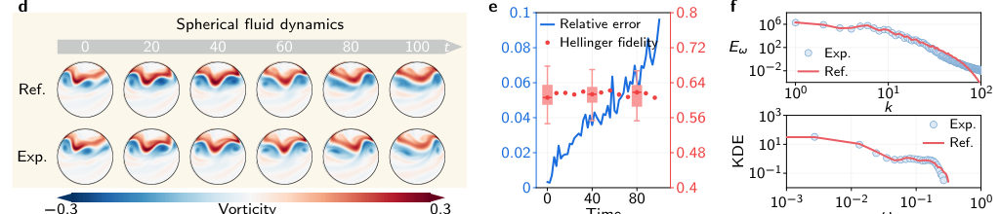
<figcaption class="paper-figure-caption"><b>Fig 3.</b> FIG. 3. Assessment of the QKM framework on benchmark nonlinear dynamical systems. a, Quantum simulation of a 3D reaction-diffusion system using the QKM on the superconducting processor “Yudu”. Volume renderings compare the experimental reactant-concentration fields 𝑢with the reference solutions at 𝑡= 100, 200, and 300. The QKM result accurately captures the temporal evolution of the total energy ⟨𝑢2⟩/2 in b, where ⟨·⟩denotes volume average. The relative error 𝜀𝐿2 remains small, and the median Hellinger fidelity stays close to unity in c, demonstrating quantitative agreement with the nonlinear dynamics. d, Quantum simulation of spherical fluid dynamics using the QKM on the superconducting...</figcaption>
</figure>
<figure class="paper-figure-card">
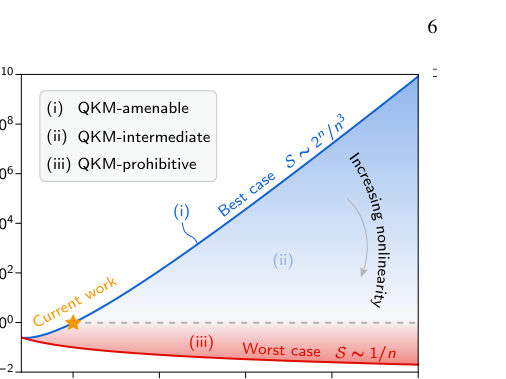
<figcaption class="paper-figure-caption"><b>Fig 4.</b> FIG. 5. Quantum-speedup regimes of the QKM. The quantum speedup S as a function of the number of qubits 𝑛. The upper blue curve represents the best-case scaling, S ∼2𝑛/𝑛3, achieved when a first-order circuit ansatz corresponding to a single 𝑅𝑧layer already provides sufficient accuracy. Problems in this limit are classified as QKM-amenable. With increasing nonlinearity of the target dy- namics, higher-order QKM representations and more retained terms are required, thereby increasing the quantum cost and lowering the achievable speedup. The region between the best-case curve and the threshold S = 1 defines the QKM-intermediate regime, where the first-order approximation is insufficient, yet...</figcaption>
</figure>
<figure class="paper-figure-card">
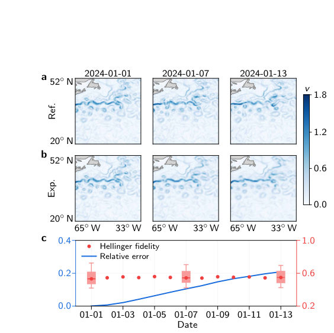
<figcaption class="paper-figure-caption"><b>Fig 5.</b> FIG. 4. Quantum simulation of real-world Gulf Stream ocean currents on the superconducting processor “Yudu”. a, Surface geostrophic velocity 𝑣derived from satellite observations on three dates spanning January 1 to 13, 2024. b, Corresponding QKM results simulated by the “Yudu” processor. c, Temporal evolution of the relative error 𝜀𝐿2 and the median Hellinger fidelity, with box plots showing the fidelity distribution across circuit instances on January 1, 7, and 13, 2024.</figcaption>
</figure>
</div>

<p><strong>Summary.</strong> The paper introduces the Quantum Koopman Method (QKM) to overcome the limitation of unitary evolution when simulating nonlinear physical processes. By mapping these dynamics into a linear observable space, it implements the evolution using shallow, parallel quantum circuits on superconducting hardware. This approach successfully simulates complex fluid and reaction-diffusion systems while quantifying the theoretical limits imposed by finite representation size.</p>
<p><strong>Why it may be interesting.</strong> This work provides a concrete, hardware-aware pathway for simulating complex, non-Hamiltonian dynamics that are central to many areas of AMO physics and open quantum systems research.</p>
<details>
<summary>Detailed structure</summary>
<p><strong>Main problem.</strong> The core challenge is simulating real-world nonlinear dynamics, which are fundamentally incompatible with the unitary evolution constraints of current quantum hardware.</p>
<p><strong>Main result.</strong> The Quantum Koopman Method (QKM) successfully simulates complex systems like fluid dynamics and reaction-diffusion processes on superconducting processors, establishing a practical boundary for near-term quantum simulation.</p>
<p><strong>Method.</strong> It uses the QKM to map nonlinear dynamics into an infinite-dimensional linear observable space, projects this onto a finite subspace, and implements the resulting non-unitary evolution using shallow, parallel quantum circuits.</p>
<p><strong>Model / system.</strong> The method is tested on three benchmarks: 3D reaction-diffusion systems (Gray-Scott), shallow-water dynamics on a sphere, and real-world Gulf Stream current observations. The implementation uses superconducting transmon qubits.</p>
<p><strong>Key observables.</strong> Relative $L_2$ error ($\ell$), enstrophy spectrum, vorticity field ($\omega$) evolution, and training/validation losses ($\ell_{train}, \ell_{val}$).</p>
<p><strong>Important parameters / regimes.</strong> The simulation scales with grid resolution ($D$), number of qubits per circuit ($n = O(\log D)$), and the number of parallel spectral channels ($h=O(n)$).</p>
<p><strong>Assumptions / limitations.</strong> The method assumes that the dynamics can be accurately captured by a finite-dimensional Koopman subspace, and it relies on hybrid classical/quantum processing where an NN encoder prepares initial states.</p>
<p><strong>Figures summary.</strong> Figures illustrate the QKM schematic, the hardware-efficient quantum circuit structure (using $R_z$ layers), and comparisons of simulated dynamics against reference solutions for fluid motion and reaction-diffusion systems.</p>
<p><strong>Paper structure.</strong> The paper introduces the QKM framework by linearizing nonlinear evolution. It details the quantum implementation using spectral decomposition into parallel circuits. Validation is performed on three physical benchmarks, followed by ablation studies to quantify sources of error (spectral sampling vs. ansatz structure).</p>
</details>
<details>
<summary>Abstract</summary>
<p>Nonlinear dynamics is ubiquitous in nature, ranging from chemical pattern formation to ocean circulation, yet its simulation on quantum computers is fundamentally limited by the unitary nature of quantum evolution. We propose the quantum Koopman method, a data-driven framework that embeds nonlinear dynamics into a learned linear representation and implements the resulting evolution using shallow quantum circuits. This method learns Koopman observables from trajectory data, projects the lifted dynamics onto a finite-dimensional subspace, and decomposes the corresponding non-unitary propagator into parallel spectral channels. We utilize the Koopman method on a superconducting processor to simulate three distinct nonlinear systems, comprising reaction-diffusion dynamics, fluid motion on a sphere, and satellite-derived observations of Gulf Stream currents, employing up to 32 parallel circuits of 10 qubits. These quantum simulations capture the dominant multiscale patterns and statistical signatures of the underlying dynamics, and reveal a transition from performance limited by hardware noise in weakly nonlinear systems to performance limited by finite-dimensional Koopman representations as nonlinear scale interactions increase. This transition identifies a practical boundary for quantum-amenable nonlinear dynamics, establishing a hardware-validated route for simulating moderately nonlinear dynamics on near-term quantum hardware.</p>
</details>
<p><sub><a href="#top">↑ back to top</a></sub></p>

<p><a id="paper-2607.06672"></a></p>
<h3 id="spin-singlets-are-useful"><a href="http://arxiv.org/abs/2607.06672v1">Spin singlets are useful</a></h3>
<p><strong>Authors:</strong> Silas Hoffman, Edward H. Chen, Matthew Brooks, Stephen Carr, Daniel Volya, Alan Tran, Tyler Keating, Thaddeus D. Ladd, Charles Tahan<br>
<strong>Type:</strong> theory · <strong>Category:</strong> quantum information and computing · <strong>PDF:</strong> <a href="https://arxiv.org/pdf/2607.06672v1">https://arxiv.org/pdf/2607.06672v1</a><br>
<strong>Analysis basis:</strong> full PDF text, analyzed in chunks
<strong>Topic relevance:</strong> 🔥 <code>entanglement &amp; information structure</code> <strong>4/5</strong> · <code>spintronics-quantum-optics interface</code> <strong>3/5</strong> · <code>analog quantum simulation</code> <strong>2/5</strong> · <code>quantum measurements</code> <strong>2/5</strong> · <code>QC/QI experiment</code> <strong>1/5</strong> · <code>exotic spin models in light-matter</code> <strong>1/5</strong> · <code>methods for driven-dissipative</code> <strong>1/5</strong> · <code>non-equilibrium dynamics</code> <strong>1/5</strong></p>
<div class="figure-strip-hint">↔ Scroll figures horizontally</div>
<div class="paper-figures-scroll">
<figure class="paper-figure-card">
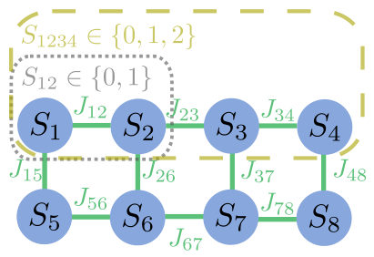
<figcaption class="paper-figure-caption"><b>Fig 1.</b> FIG. 1. Layout of a 2 × 4 spin array and coupling with quan- tum numbers labeling the spin-zero manifold.</figcaption>
</figure>
<figure class="paper-figure-card">
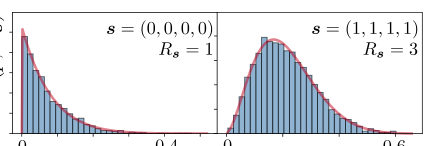
<figcaption class="paper-figure-caption"><b>Fig 2.</b> FIG. 4. Simulated probability distributions of the all-singlet readout (left panel) and all-triplet readout (right panel) of a 2×4 array using 2000 circuits each with 100 randomly chosen exchange gates.Red envelopes show the exact Beta distribu- tion.</figcaption>
</figure>
<figure class="paper-figure-card">
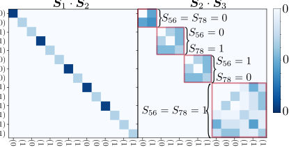
<figcaption class="paper-figure-caption"><b>Fig 3.</b> FIG. 3. Magnitude of the elements of the unitary matrices S1 · S2 (left) and S2 · S3 (right) in the fusion-tree basis of a 2 × 4 array of spins.</figcaption>
</figure>
<figure class="paper-figure-card">
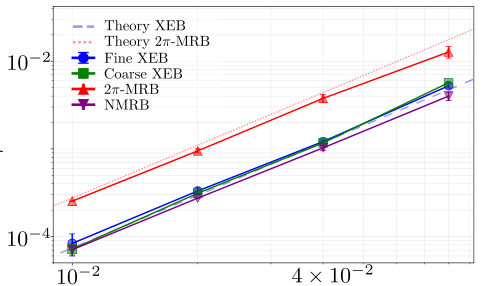
<figcaption class="paper-figure-caption"><b>Fig 4.</b> FIG. 6. Average error per gate, γ, as a function of charge noise variance, σ, extracted from numerical simulations using fine XEB (circles), coarse XEB (squares), 2π-MRB (up-triangles), and NMRB (down-triangles). Theoretical prediction of γ for fine XEB, coarse XEB, and NMRB (dashed curve) and 2π- MRB (dotted curve).</figcaption>
</figure>
</div>

<p><strong>Summary.</strong> This paper demonstrates that restricting the dynamics of an exchange-coupled spin array to its total spin-zero manifold ($ ext{S}_0$) provides a computationally advantageous subspace compared to standard encoding methods. By adapting advanced quantum benchmarks like XEB and OTOCs, the authors show that this physical constraint can accelerate the path toward demonstrating quantum advantage using semiconductor spin qubits.</p>
<p><strong>Why it may be interesting.</strong> This work directly bridges solid-state physics (quantum dots/spins) with advanced quantum information protocols by showing how inherent physical symmetries ($   ext{S}_0$) can be leveraged as a computational resource, providing concrete benchmarking tools for realizing fault-tolerant computation in spin arrays.</p>
<details>
<summary>Detailed structure</summary>
<p><strong>Main problem.</strong> The paper evaluates how utilizing the spin-zero manifold ($   ext{S}_0$) of an exchange-coupled spin array can enhance computational space for quantum simulation and computation beyond limitations imposed by traditional modular qubit encoding.</p>
<p><strong>Main result.</strong> Operating within the $ ext{S}_0$ manifold allows for a significantly larger accessible Hilbert space compared to standard methods, and benchmarking metrics like XEB and OTOCs confirm that this subspace supports realizing deep circuits necessary for quantum advantage demonstrations in semiconductor spin qubits.</p>
<p><strong>Method.</strong> The authors generalize established quantum benchmarking techniques—Cross-Entropy Benchmarking (XEB), Mirror Randomized Benchmarking (MRB), and Out-of-Time-Ordered Correlators (OTOCs)—to the specific constraints of the total spin-zero subspace dynamics.</p>
<p><strong>Model / system.</strong> The system is modeled using an array of $N$ electron spins in semiconducting quantum dots, governed by Heisenberg exchange interactions. The focus is restricted to the $   ext{S}_0$ manifold, which preserves the total spin zero state exactly.</p>
<p><strong>Key observables.</strong> Coarse-grained measurement probabilities ($p_s$), XEB fidelity ($F$), MRB fidelity ($F_{	ext{MRB}}$), and Out-of-Time-Ordered Correlators ($ ext{OTOC}_k$).</p>
<p><strong>Important parameters / regimes.</strong> System size $N$, noise variance $\sigma^2$ (for error scaling), and the ratio of coupling strengths ($\phi = J_2/J_1$) for lattice structures.</p>
<p><strong>Assumptions / limitations.</strong> The analysis proceeds despite the coarse-grained nature of readout measurements (Pauli Spin Blockade) and assumes that local error correction can be addressed within the highly entangled $ ext{S}_0$ states.</p>
<p><strong>Figures summary.</strong> Figures illustrate the spin array layout, the construction of basis states in the fusion-tree basis for the $  ext{S}_0$ manifold, and simulated probability distributions showing how readout measurements follow an Erlang distribution rather than a standard Porter–Thomas distribution.</p>
<p><strong>Paper structure.</strong> The paper first establishes the physical utility of the $  ext{S}_0$ manifold over modular encoding. It then details the generalization of benchmarking metrics (XEB, MRB) to this subspace, providing theoretical predictions based on Beta distributions for measurement probabilities. Finally, it extends the analysis using OTOCs to probe complex dynamics and potential quantum advantage.</p>
</details>
<details>
<summary>Abstract</summary>
<p>We evaluate the utility of the spin-zero manifold of an exchange-coupled array of $N$ spins for tasks in quantum computation and quantum simulation. Since pairs of electrons can be readily initialized into a product state of singlets in semiconducting quantum dot arrays, the full spin-zero manifold is available with exchange-only control, providing a Hilbert space of approximate dimension $2^N/(N/2)^{3/2}$, asymptotically close to the $2^N$ dimension of the full spin Hilbert space. Leveraging the spin-zero manifold enables larger computational space in a given array compared to traditional exchange-only control, in which spin arrays are organized into modular units of $n$ spins comprising $N/n$ encoded qubits, limiting to the exponentially smaller Hilbert dimension $2^{N/n}$. Here we focus on benchmarking metrics for this resource utilization by generalizing cross-entropy benchmarking, mirror benchmarking, and out-of-time-ordered correlators to this system. We show that operating in the spin-zero manifold can accelerate the realization of computational quantum advantage applications in semiconductor-based spin qubits.</p>
</details>
<p><sub><a href="#top">↑ back to top</a></sub></p>

<p><a id="paper-2607.07138"></a></p>
<h3 id="dynamical-structure-factor-with-a-pumping-approach-on-a-trapped-ion-quantum-computer"><a href="http://arxiv.org/abs/2607.07138v1">Dynamical structure factor with a pumping approach on a trapped-ion quantum computer</a></h3>
<p><strong>Authors:</strong> Etienne Granet, Keisuke Murota, Henrik Dreyer, Kentaro Yamamoto, Juan Pedersen, Hidemaro Suwa<br>
<strong>Type:</strong> both · <strong>Category:</strong> other · <strong>PDF:</strong> <a href="https://arxiv.org/pdf/2607.07138v1">https://arxiv.org/pdf/2607.07138v1</a><br>
<strong>Analysis basis:</strong> full PDF text, analyzed in chunks
<strong>Topic relevance:</strong> 🔥 <code>QC/QI experiment</code> <strong>4/5</strong> · 🔥 <code>analog quantum simulation</code> <strong>4/5</strong> · <code>non-equilibrium dynamics</code> <strong>2/5</strong> · <code>Frenkel-Kontorova</code> <strong>1/5</strong> · <code>entanglement &amp; information structure</code> <strong>1/5</strong> · <code>exotic spin models in light-matter</code> <strong>1/5</strong> · <code>quantum measurements</code> <strong>1/5</strong></p>
<div class="figure-strip-hint">↔ Scroll figures horizontally</div>
<div class="paper-figures-scroll">
<figure class="paper-figure-card">
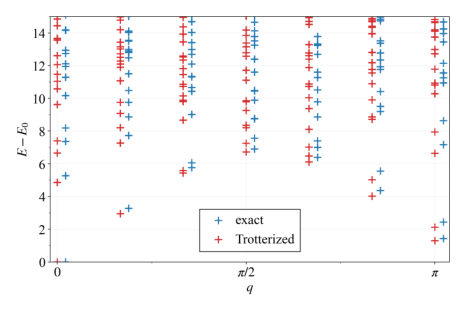
<figcaption class="paper-figure-caption"><b>Fig 1.</b> FIG. 1. Influence of the approximate time evolution. The position in the energy-momentum space of the excitation en- ergies of the 1D Heisenberg model in size L = 12, from the exact Hamiltonian H (blue), and from the corresponding Flo- quet Hamiltonian HF in (16) with dt = 0.24 (red). The mo- menta of the exact Hamiltonian are slightly shifted for better visibility.</figcaption>
</figure>
<figure class="paper-figure-card">
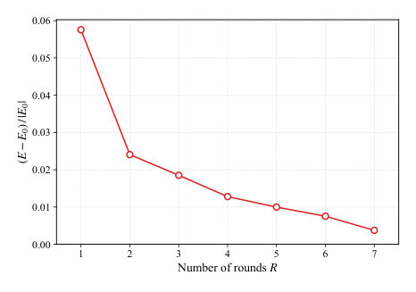
<figcaption class="paper-figure-caption"><b>Fig 2.</b> FIG. 2. Ground state preparation. Relative energy differ- ence (E −E0)/|E0| between the energy E of the optimized ansatz (18) and the exact ground-state energy E0 of the L = 20 Heisenberg chain, as a function of the number of rounds R.</figcaption>
</figure>
<figure class="paper-figure-card">
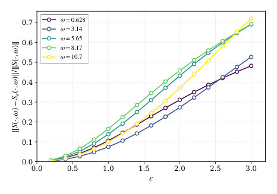
<figcaption class="paper-figure-caption"><b>Fig 3.</b> FIG. 3. Influence of the coupling ϵ. Relative distance ||S(·, ω) −Sϵ(·, ω)||/||S(·, ω)|| between the DSF in the limit ϵ →0 and the one computed at finite coupling ϵ, as a func- tion of ϵ for several target frequencies ω. Here Sϵ(·, ω) denotes the vector of momentum components S(q, ω) at fixed ω, with q = 2πk</figcaption>
</figure>
<figure class="paper-figure-card">
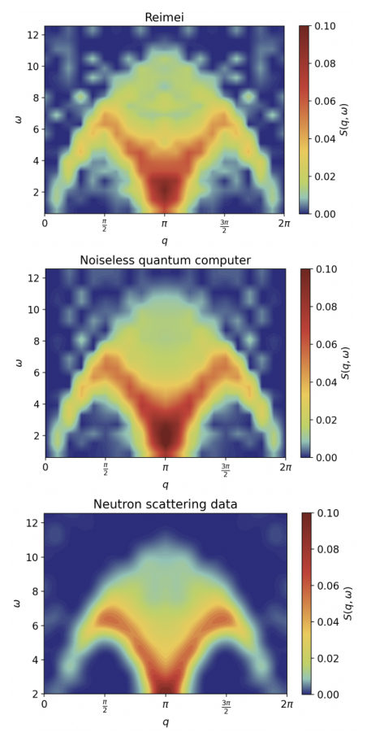
<figcaption class="paper-figure-caption"><b>Fig 4.</b> FIG. 4. Comparison between DSFs. Color plot for S(q, ω), as measured on Quantinuum Reimei ion-trapped quantum com- puter (top panel), on an ideal noiseless quantum computer using the same circuits (middle panel), and obtained from neutron scattering experiments (bottom panel). The data for the neutron scattering experiment panel was numerically ex- tracted from the plots of Ref. [41], with the overall arbitrary scale of S(q, ω) being chosen so that the maximal value is 0.1.</figcaption>
</figure>
</div>

<p><strong>Summary.</strong> This paper presents a novel 'pumping approach' to calculate the Dynamical Structure Factor, $S(q, \omega)$, which is vital for understanding material structure from neutron scattering. The technique is demonstrated using a trapped-ion quantum computer platform to simulate models like the 1D Heisenberg chain. It shows that this method efficiently targets specific frequencies and yields results matching both simulations and experimental expectations.</p>
<p><strong>Why it may be interesting.</strong> This work directly bridges fundamental condensed matter physics observables (like DSF) with cutting-edge quantum hardware capabilities (trapped ions), offering a concrete roadmap for simulating complex many-body dynamics on NISQ devices.</p>
<details>
<summary>Detailed structure</summary>
<p><strong>Main problem.</strong> The primary goal is computing Dynamical Structure Factors (DSF), $S(q, \omega)$, which are crucial for interpreting neutron-scattering experiments on materials.</p>
<p><strong>Main result.</strong> The authors successfully demonstrated the feasibility of calculating DSF using a novel 'pumping approach' directly on a trapped-ion quantum computer platform.</p>
<p><strong>Method.</strong> They introduce a pumping technique that uses time evolution with a source term oscillating at the target frequency $\omega$ to measure $S(q, \omega)$, significantly reducing overhead compared to older methods.</p>
<p><strong>Model / system.</strong> The study applies this method to model systems like the 1D Heisenberg chain (relevant to copper sulfate) and tests it on the Quantinuum Reimei trapped-ion quantum computer.</p>
<p><strong>Key observables.</strong> Dynamical Structure Factor, $S(q, \omega)$; relative energy difference between ansatz and ground state; error metrics related to $\epsilon$ and time truncation $T$.</p>
<p><strong>Important parameters / regimes.</strong> System size ($L=20$), Trotter step ($dt=0.24$), total evolution time ($T=2.4$), and the coupling parameter ($\epsilon$).</p>
<p><strong>Assumptions / limitations.</strong> The method relies on approximating the infinite-time limit via finite truncation (introducing sinc function artifacts) and uses an adiabatic-inspired ansatz for state preparation.</p>
<p><strong>Figures summary.</strong> Figures illustrate the influence of time evolution approximations on excitation energies, track the convergence of the optimized ansatz energy to the ground state energy, and compare measured DSF results against noiseless simulations and experimental data.</p>
<p><strong>Paper structure.</strong> The paper introduces the physical problem (DSF), details the novel pumping methodology for quantum computation, describes the implementation using trapped-ion hardware, presents comparisons with theoretical benchmarks, and concludes with validation of the approach.</p>
</details>
<details>
<summary>Abstract</summary>
<p>Dynamical structure factors (DSF) measured with neutron-scattering experiments provide key insights into the structure of materials. Their computation requires both the preparation of an equilibrium state and the implementation of Hamiltonian dynamics. We demonstrate the feasibility of computing DSF on the Quantinuum Reimei trapped-ion quantum computer, comparing the DSF of 1D Heisenberg model on $20$ sites, and that of the copper sulfate crystal. To that end, we introduce a pumping approach for computing the DSF $S(q,ω)$ on quantum computers that enables targeting specific arbitrary values of frequencies $ω$. This method time-evolves the initial state using a time-dependent Hamiltonian perturbed by a source term oscillating at the target frequency $ω$. When targeting only a few frequency values, this approach provides a significant reduction in shot overhead compared to previous methods.</p>
</details>
<p><sub><a href="#top">↑ back to top</a></sub></p>

<p><a id="paper-2607.07556"></a></p>
<h3 id="entanglement-asymmetry-in-random-quantum-automata"><a href="http://arxiv.org/abs/2607.07556v1">Entanglement Asymmetry in Random Quantum Automata</a></h3>
<p><strong>Authors:</strong> Olalla A. Castro-Alvaredo, Dávid Szász-Schagrin, Michele Mazzoni<br>
<strong>Type:</strong> theory · <strong>Category:</strong> statistical mechanics · <strong>PDF:</strong> <a href="https://arxiv.org/pdf/2607.07556v1">https://arxiv.org/pdf/2607.07556v1</a><br>
<strong>Analysis basis:</strong> full PDF text, analyzed in chunks
<strong>Topic relevance:</strong> 🔥 <code>entanglement &amp; information structure</code> <strong>4/5</strong> · <code>non-equilibrium dynamics</code> <strong>3/5</strong> · <code>non-equilibrium universality</code> <strong>2/5</strong> · <code>Keldysh / 2PI / non-Gaussian methods</code> <strong>1/5</strong> · <code>correlated / nonlocal dissipation</code> <strong>1/5</strong> · <code>driven-dissipative phase transition</code> <strong>1/5</strong> · <code>methods for driven-dissipative</code> <strong>1/5</strong> · <code>scars &amp; prethermalization</code> <strong>1/5</strong></p>
<div class="figure-strip-hint">↔ Scroll figures horizontally</div>
<div class="paper-figures-scroll">
<figure class="paper-figure-card">
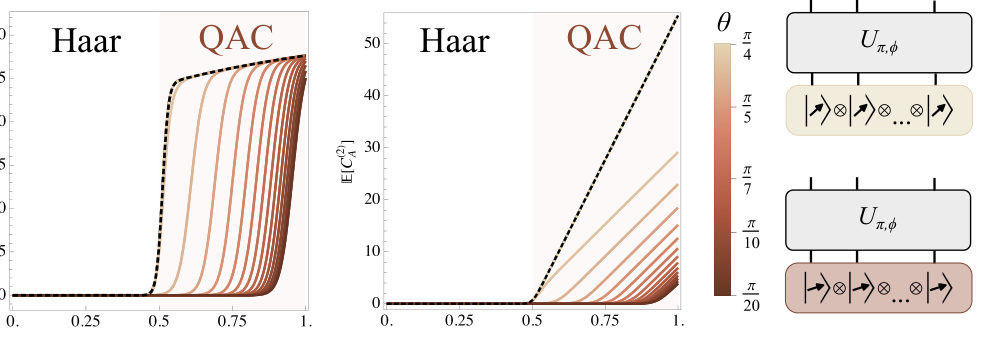
<figcaption class="paper-figure-caption"><b>Fig 1.</b> FIG. 1. Schematic depiction of our main results. We apply a global random permutation of basis states followed by a random phase transformation to a homogeneous product state |ψ0⟩= (cos(θ)|0⟩+ sin(θ)|1⟩)⊗L (colored lines). For θ = π/4, the spread of the average R´enyi-2 asymmetry and R´enyi-2 subsystem coherence is akin to that of Haar random states (black dashed line), with both quantities being zero for subsystems with LA &lt; L/2. Decreasing θ results in a much more localized state in the Hilbert space and the onset of the averaged R´enyi-2 asymmetry and R´enyi-2 subsystem coherence cannot occur at LA = L/2 because it is prevented by a too small participation entropy. The same is obtained...</figcaption>
</figure>
<figure class="paper-figure-card">
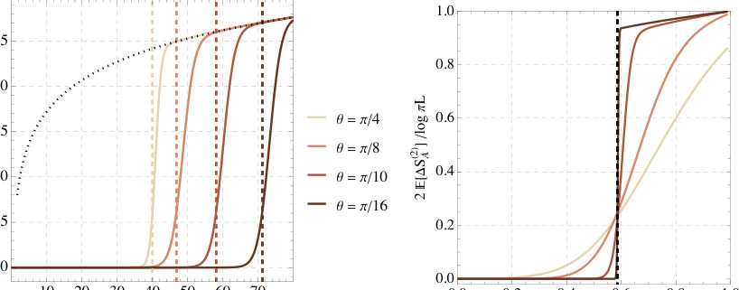
<figcaption class="paper-figure-caption"><b>Fig 2.</b> FIG. 2. Left: The entanglement asymmetry Page curve (22) averaged over the global quantum automaton ensemble starting from an initial product state |ψ0⟩(27) for various values of the tilting angle θ. The dashed lines denote the onset values L∗ A as defined in Eq. (25). The black dotted curve corresponds to (1/2) log(πLA) as given in Eq. (31). We take L = 80. Right: The finite size scaling of entanglement asymmetry Page curve (22) averaged over the global quantum automaton ensemble starting from an initial product state |ψ0⟩(27) with θ = π/8 for increasing system sizes L. The dashed line denote the onset value L∗ A/L as defined in Eq. (25).</figcaption>
</figure>
<figure class="paper-figure-card">
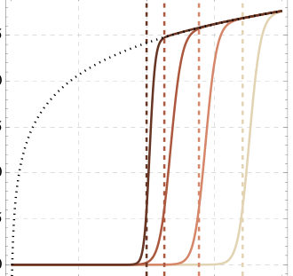
<figcaption class="paper-figure-caption"><b>Fig 3.</b> FIG. 3. The entanglement asymmetry Page curve (22) averaged over the global quantum automaton ensemble starting from an initial Dicke-state |Dk⟩(29) for different values of k. The dashed lines denote the onset values L∗ A as defined in Eq. (25). The black dotted curve corresponds to (1/2) log(πLA) as given in Eq. (31). We take L = 80.</figcaption>
</figure>
<figure class="paper-figure-card">
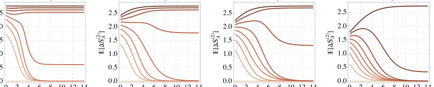
<figcaption class="paper-figure-caption"><b>Fig 4.</b> FIG. 4. The averaged entanglement asymmetry under 2-local random quantum automaton circuit evolution starting from an initial product state |ψ0⟩(27) for various values of the tilting angle θ. We take L = 80.</figcaption>
</figure>
<figure class="paper-figure-card">
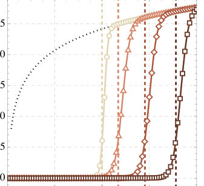
<figcaption class="paper-figure-caption"><b>Fig 5.</b> FIG. 5. The entanglement asymmetry Page curve averaged over the 2-local quantum automaton ensemble (markers) starting from an initial product state |ψ0⟩(27) for various values of the tilting angle θ. The global ensemble results are shown in solid lines. The dashed lines denote the onset values L∗ A as defined in Eq. (25). The black dotted curve corresponds to (1/2) log(πLA). We take L = 80.</figcaption>
</figure>
</div>

<p><strong>Summary.</strong> This paper analyzes subsystem entanglement asymmetry and coherence in systems evolving under Random Quantum Automata. It finds that the approach to equilibrium differs significantly from standard random unitary models because the dynamics conserve participation entropy. This leads to initial state dependence in the onset of local symmetrization, offering insights into how conservation laws shape quantum information spreading.</p>
<p><strong>Why it may be interesting.</strong> It provides a detailed theoretical comparison of entanglement dynamics in structured random quantum circuits (QACs) versus unstructured ones (Haar), highlighting how underlying conservation laws modify expected thermalization/scrambling behaviors relevant to many-body physics.</p>
<details>
<summary>Detailed structure</summary>
<p><strong>Main problem.</strong> The study investigates subsystem entanglement asymmetry in random quantum automaton ensembles (QAEs) compared to established models like Haar-random circuits.</p>
<p><strong>Main result.</strong> Unlike Haar-random circuits, the scale at which local symmetrization occurs in QACs depends on the initial state due to the interplay between conserved participation entropy and charge sector exploration.</p>
<p><strong>Method.</strong> The authors compute ensemble averages of subsystem entanglement asymmetry using techniques involving replica vectorization formalism and asymptotic analysis for large system sizes.</p>
<p><strong>Model / system.</strong> The model involves Random Quantum Automata (QA gates), which operate by applying a random permutation of the computational basis followed by global phase shifts to a bipartite quantum system S=A U B.</p>
<p><strong>Key observables.</strong> Subsystem entanglement asymmetry ($    ext{U}(1)$ symmetry related), participation entropy, and subsystem coherence are key observables analyzed across different subsystem sizes.</p>
<p><strong>Important parameters / regimes.</strong> The analysis focuses on the late-time limit, varying subsystem sizes ($L_A$), and comparing results to Haar-random circuit limits.</p>
<p><strong>Assumptions / limitations.</strong> The analysis assumes self-averaging properties hold for ensemble averages and relies on approximations derived from the Choi-Jamiołkowski representation.</p>
<p><strong>Figures summary.</strong> Figure 1 schematically contrasts $ ext{R\'enyi-2}$ asymmetry and coherence in QAEs versus Haar states, showing initial state dependence. Figure 7 shows time evolution of average coherence for varying tilting angles under 2-local circuit dynamics.</p>
<p><strong>Paper structure.</strong> The paper progresses by defining the observables (asymmetry, purity) within the QAE framework, deriving formulas using advanced mathematical tools, establishing key relationships between different measures (e.g., coherence and purity), and finally analyzing the asymptotic behavior and time evolution in specific regimes.</p>
</details>
<details>
<summary>Abstract</summary>
<p>We investigate the subsystem entanglement asymmetry in random quantum automaton ensembles, which are generated by permuting the basis states in the Hilbert space and applying global phase shifts. We compute the ensemble average of the $U(1)$ subsystem asymmetry in different connectivity geometries, showing that the late-time limit of the ensemble associated to a 2-local circuit geometry coincides with the all-to-all ensemble average. By focusing on different subsystem sizes, we demonstrate that, similarly to Haar-random circuits, the system locally symmetrizes. However, in sharp contrast to the Haar-random setting, the scale at which symmetrization happens depends on the initial state, a phenomenon we associate with the interplay of conservation of the participation entropy and the uniform exploration of charge sectors. Additionally, we connect the growth of the subsystem asymmetry to the subsystem coherence and show that their growth is characterized by the same symmetrization scale.</p>
</details>
<p><sub><a href="#top">↑ back to top</a></sub></p>

<p><a id="paper-2607.07093"></a></p>
<h3 id="phase-selected-efficient-single-photon-frequency-conversion-via-local-fano-resonance-in-a-two-giant-atom-waveguide-qed-system"><a href="http://arxiv.org/abs/2607.07093v1">Phase-Selected Efficient Single-Photon Frequency Conversion via Local Fano Resonance in a Two-Giant-Atom Waveguide-QED System</a></h3>
<p><strong>Authors:</strong> Qing-Ao Xiang, Yan Liu, Xin-Yuan Yang, Ya-Ju Song<br>
<strong>Type:</strong> theory · <strong>Category:</strong> other · <strong>PDF:</strong> <a href="https://arxiv.org/pdf/2607.07093v1">https://arxiv.org/pdf/2607.07093v1</a><br>
<strong>Analysis basis:</strong> full PDF text, analyzed in chunks
<strong>Topic relevance:</strong> 🔥 <code>interference shaping light</code> <strong>4/5</strong> · <code>correlated cavity matter</code> <strong>3/5</strong> · <code>Tavis-Cummings &amp; cavity-many-emitter</code> <strong>2/5</strong> · <code>Keldysh / 2PI / non-Gaussian methods</code> <strong>1/5</strong> · <code>analog quantum simulation</code> <strong>1/5</strong> · <code>correlated / nonlocal dissipation</code> <strong>1/5</strong> · <code>driven-dissipative phase transition</code> <strong>1/5</strong> · <code>methods for driven-dissipative</code> <strong>1/5</strong></p>
<div class="figure-strip-hint">↔ Scroll figures horizontally</div>
<div class="paper-figures-scroll">
<figure class="paper-figure-card">
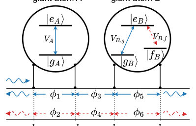
<figcaption class="paper-figure-caption"><b>Fig 1.</b> FIG. 1. Schematic of the waveguide-QED system. A two-level giant atom A and a Λ-type three-level giant atom B couple to a common waveguide at points d1,2 and d3,4, respectively. The blue solid and red dashed lines denote the g- and f-channel photons, with propagation phases ϕ2n−1 = kg(dn+1 −dn) and ϕ2n = kf(dn+1 −dn), n = 1, 2, 3.</figcaption>
</figure>
<figure class="paper-figure-card">
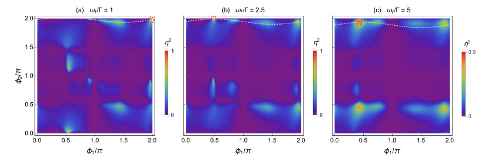
<figcaption class="paper-figure-caption"><b>Fig 2.</b> FIG. 2. Distribution of the single-pole resonance weight η2 in the phase plane for varying ωf. Bright regions indicate optimal phase-selection zones for efficient forward conversion. The white dashed line traces the approximate phase relation derived from the local-background suppression condition near ϕ2 ≃2π.</figcaption>
</figure>
<figure class="paper-figure-card">
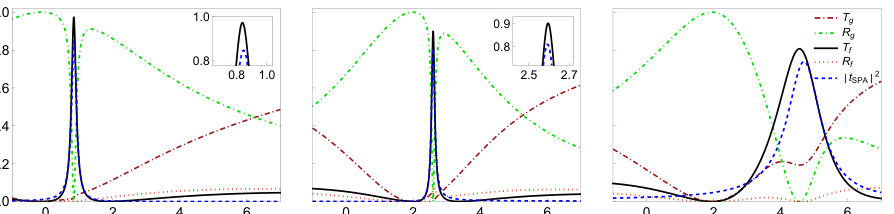
<figcaption class="paper-figure-caption"><b>Fig 3.</b> FIG. 3. Exact four-channel scattering probabilities and the local single-pole approximation |tSPA|2 for bright-region phases. The approximation accurately captures the target inelastic peak Tf within the target window and confirms the suppression of elastic (Tg, Rg) and inelastic reflection (Rf) channels.</figcaption>
</figure>
<figure class="paper-figure-card">
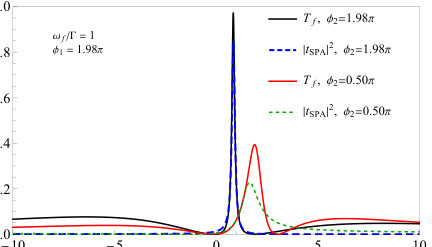
<figcaption class="paper-figure-caption"><b>Fig 4.</b> FIG. 4. Comparison between the exact Tf (solid) and the local single-pole approximation |tSPA|2 (dashed) for ωf/Γ = 1 and ϕ1 = 1.98π. Black and blue curves: bright-region phase ϕ2 = 1.98π, validating the approximation; red and green curves: reference phase ϕ2 = 0.50π, where deviations arise from non-target resonances and background.</figcaption>
</figure>
<figure class="paper-figure-card">
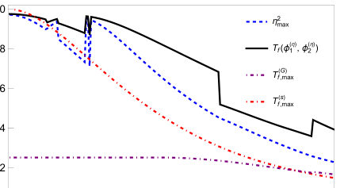
<figcaption class="paper-figure-caption"><b>Fig 5.</b> FIG. 6. Advantage of the two-giant-atom scheme over the single Λ-type giant-atom and small-atom models. The similar trends of η2 max and Tf(ϕ(η) 1 , ϕ(η) 2 ) validate η2 as an effective phase-selection criterion.</figcaption>
</figure>
</div>

<p><strong>Summary.</strong> The paper theoretically investigates single-photon frequency conversion in a two-giant-atom waveguide QED system. By employing a local single-pole approximation, the complex spectral response is mapped onto a tunable Fano resonance. The key finding is that precise phase control over the atomic coupling points allows for background suppression, leading to highly efficient and robust frequency conversion superior to simpler quantum systems.</p>
<p><strong>Why it may be interesting.</strong> This work provides a detailed mechanism for engineering resonant light-matter interactions using structured quantum systems, specifically demonstrating how internal phase control can maximize conversion efficiency by manipulating interference terms into a controllable Fano profile.</p>
<details>
<summary>Detailed structure</summary>
<p><strong>Main problem.</strong> The primary goal is achieving highly efficient single-photon frequency conversion using quantum interference effects.</p>
<p><strong>Main result.</strong> The two-giant-atom system enables enhanced, phase-controlled frequency conversion by engineering a local Fano resonance structure. This surpasses the efficiency of simpler single-atom or small-atom models.</p>
<p><strong>Method.</strong> The analysis uses a real-space approach and applies a local single-pole approximation to simplify complex scattering amplitudes into an analytically tractable Fano lineshape model.</p>
<p><strong>Model / system.</strong> The system is a waveguide Quantum Electrodynamics (QED) setup involving two giant atoms—a two-level atom and a $\Lambda$-type three-level atom—coupled to a 1D waveguide. The interaction Hamiltonian governs the coupling dynamics.</p>
<p><strong>Key observables.</strong> Inelastic transmission spectrum ($T_f$), local Fano lineshape, single-pole resonance weight ($\eta^2$).</p>
<p><strong>Important parameters / regimes.</strong> Photon propagation phase between atoms' coupling points ($\phi_1, \phi_2$); detuning ($\omega_f/\Gamma$); loss parameter ($\kappa/\Gamma$).</p>
<p><strong>Assumptions / limitations.</strong> The analysis relies on the Markovian approximation and assumes specific symmetric-coupling conditions for simplification.</p>
<p><strong>Figures summary.</strong> Figures illustrate the phase plane mapping of $\eta^2$, comparing exact scattering probabilities to the local single-pole approximation, and showing $T_f$ vs. $\omega_f$ across different atomic models.</p>
<p><strong>Paper structure.</strong> The paper progresses from deriving complex four-channel scattering amplitudes to applying a local single-pole approximation, identifying the Fano structure, establishing phase-selection criteria via background suppression, and finally comparing the resulting efficiency against established theoretical limits.</p>
</details>
<details>
<summary>Abstract</summary>
<p>Efficient single-photon frequency conversion is investigated in a two-giant-atom waveguide-QED system, where a two-level giant atom and a $Λ$-type three-level giant atom couple to a common one-dimensional waveguide. While the $Λ$-type atom provides the inelastic channel, the two-level atom induces secondary coherent coupling, creating multi-path interference for the converted photon. Using the real-space approach and within the Markovian approximation, we derive analytical four-channel scattering amplitudes and reveal that the inelastic transmission spectrum, governed by three complex resonance poles, exhibits a multi-peak interference pattern. By introducing a local single-pole approximation, we reduce this complex spectrum to a local Fano lineshape, decomposing it into a coherent superposition of a local background term and a single-pole resonant term. The interplay between these two terms-controlled by the photon propagation phase between the giant atoms' coupling points-determines the conversion efficiency, with the background suppression condition leading to a Lorentzian reduction. Based on the single-pole resonance weight, we formulate a phase-selection criterion for highly efficient conversion. Compared with both the small-atom and single $Λ$-type giant-atom models, the two-giant-atom scheme achieves substantially enhanced inelastic transmission over a broader frequency-conversion range. This work reveals how phase-controlled local Fano resonance enables high-efficiency frequency conversion, establishing a general paradigm for engineering resonant light-matter interactions in structured quantum systems.</p>
</details>
<p><sub><a href="#top">↑ back to top</a></sub></p>

<p><a id="paper-2607.06842"></a></p>
<h3 id="universal-spin-squeezing-dynamics-in-spinor-condensates"><a href="http://arxiv.org/abs/2607.06842v1">Universal spin-squeezing dynamics in spinor condensates</a></h3>
<p><strong>Authors:</strong> Nikolaos Giovanoudis, Navid Kazemiseresht, Fabio Mezzacapo, Emilia Witkowska, Tommaso Roscilde<br>
<strong>Type:</strong> theory · <strong>Category:</strong> quantum gases · <strong>PDF:</strong> <a href="https://arxiv.org/pdf/2607.06842v1">https://arxiv.org/pdf/2607.06842v1</a><br>
<strong>Analysis basis:</strong> full PDF text, analyzed in chunks
<strong>Topic relevance:</strong> 🔥 <code>analog quantum simulation</code> <strong>4/5</strong> · <code>entanglement &amp; information structure</code> <strong>3/5</strong> · <code>exotic spin models in light-matter</code> <strong>3/5</strong> · <code>correlated / nonlocal dissipation</code> <strong>1/5</strong> · <code>methods for driven-dissipative</code> <strong>1/5</strong> · <code>non-equilibrium dynamics</code> <strong>1/5</strong></p>
<div class="figure-strip-hint">↔ Scroll figures horizontally</div>
<div class="paper-figures-scroll">
<figure class="paper-figure-card">
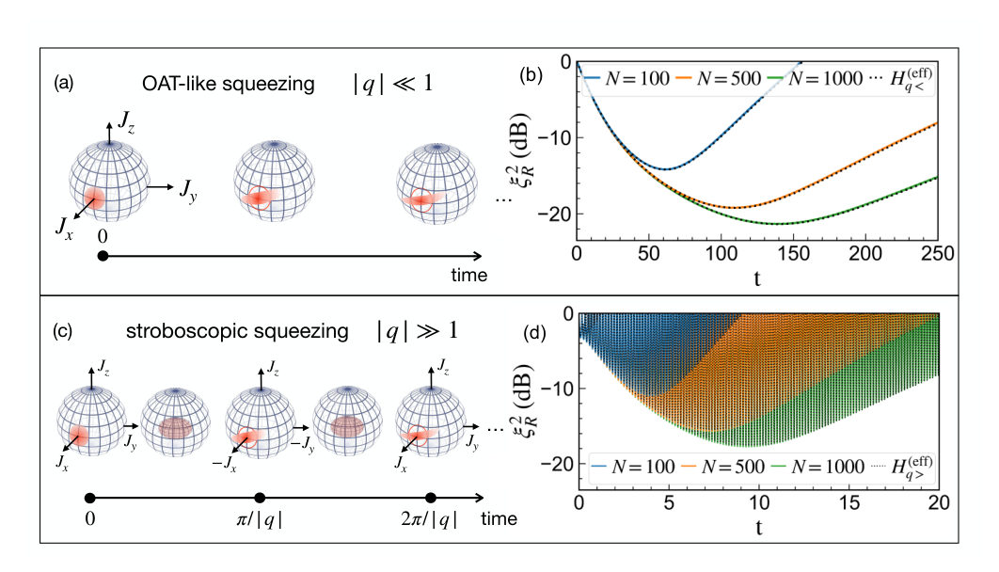
<figcaption class="paper-figure-caption"><b>Fig 1.</b> FIG. 1: Spin squeezing dynamics in spinor condensates. (a) In the case |q| ≪1 the system realizes an OAT-like dynamics; the state of the system is depicted schematically as an uncertainty region on the collective Bloch sphere for a spin of length J = N, although this length is not conserved for the model of Eq. (1) and the state leaks into the volume of the Bloch sphere. (b) Exact data for the squeezing dynamics with q = 0.1, compared to the prediction of the effective Hamiltonian Eq. (2); (c) for |q| ≫1 the spinor gas realizes instead a stroboscopic squeezing dynamics, in which OAT-like squeezing with a large collective spin occurs in rapid alternation with dynamics that makes the total...</figcaption>
</figure>
<figure class="paper-figure-card">
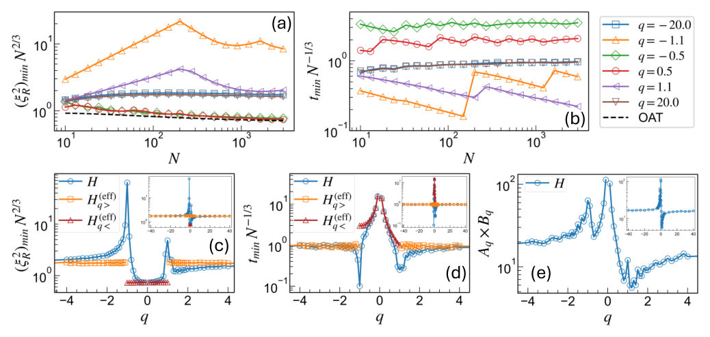
<figcaption class="paper-figure-caption"><b>Fig 2.</b> FIG. 2: Universal scaling properties. (a)-(b) Scaling of the best squeezing (ξ2 R)min and the best squeezing time tmin with system size N obtained from exact diagonalization, demonstrating the OAT scaling (ξ2 R)min ∼N −2/3 and tmin ∼N 1/3 across the explored values of N. In panel (a), the dashed line indicates the scaling of optimal squeezing achieved with one-axis-twisting dynamics for N spins S = 1; (c)-(d) Dependence of the corresponding prefactors Aq and Bq on q, revealing strong variations of the best squeezing and the best squeezing time across parameter space. (e) Optimal compromise between achievable squeezing and preparation time versus q, the lowest value is observed for |q| ∼O(1).</figcaption>
</figure>
<figure class="paper-figure-card">
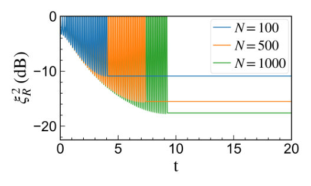
<figcaption class="paper-figure-caption"><b>Fig 3.</b> FIG. 3: Freezing of squeezed states. If q is turned off abruptly, the remaining Hamiltonian is SU(2) symmetric, so that the ensuing dynamics does not evolve the collective-spin properties, including squeezing. This allows to freeze the op- timal squeezing – here for q = 20 (up to the optimal time tmin) and increasing system size.</figcaption>
</figure>
<figure class="paper-figure-card">
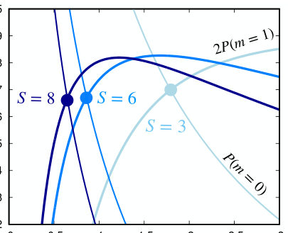
<figcaption class="paper-figure-caption"><b>Fig 4.</b> FIG. 5: Preparing a state close to the S = 1 CSSx using S &gt; 1 atoms. The probabilities P(m = 0) and 2P(m = 1) in the ground state of the Hamiltonian Eq. (12) cross at an S- dependent Rabi field Ω/q. For this field, more that 90% of the atomic population is concentrated on the states m = 0, ±1, so that the system approximates an ensemble of effective S = 1 atoms.</figcaption>
</figure>
<figure class="paper-figure-card">

<figcaption class="paper-figure-caption"><b>Fig 5.</b> FIG. 4: Details on the scaling of optimal squeezing. Evolution of the spin squeezing parameter for (a) q = ±1.1 and N = 200, 300 and (b) q = ±0.5 and N = 400, 500. In both cases, upon increasing the system size the optimal squeezing is found to advance abruptly in time from one local minimum to the next in the oscillations of the squeezing parameter.</figcaption>
</figure>
</div>

<p><strong>Summary.</strong> This paper demonstrates how spinor Bose-Einstein condensates can generate scalable spin squeezing using native spin interactions combined with a quadratic Zeeman shift. The dynamics are shown to follow universal paradigms, exhibiting different behaviors depending on the relative strength of the applied magnetic field parameter ($q$). This control mechanism is highly valuable for developing advanced quantum sensors.</p>
<p><strong>Why it may be interesting.</strong> This work provides a detailed, controllable mechanism for generating high levels of entanglement in an ultracold atomic system, offering significant potential for quantum metrology beyond standard qubit platforms.</p>
<details>
<summary>Detailed structure</summary>
<p><strong>Main problem.</strong> The primary goal is generating large-scale entangled states for quantum sensing using ultracold spinor Bose-Einstein condensates.</p>
<p><strong>Main result.</strong> Spin squeezing can be generated universally in these condensates, exhibiting distinct dynamics depending on the relative strength of spin-dependent interactions versus the quadratic Zeeman shift (OAT vs. stroboscopic regimes).</p>
<p><strong>Method.</strong> The authors employ theoretical analysis using perturbation theory (Schrieffer-Wolff transformation) and exact numerical diagonalization to model the system's evolution.</p>
<p><strong>Model / system.</strong> The physical platform is a spinor Bose-Einstein condensate of atoms with large internal spin ($S>1/2$). The dynamics are governed by an effective Hamiltonian incorporating both spin-dependent contact interactions and a quadratic Zeeman shift term.</p>
<p><strong>Key observables.</strong> Spin squeezing parameter ($\xi_R^2$), which quantifies entanglement, and the optimal time for achieving minimum $\xi_R^2$.</p>
<p><strong>Important parameters / regimes.</strong> The ratio of the quadratic Zeeman shift ($q$) to interaction strengths, leading to distinct regimes: $|q| \ll 1$ (OAT-like) and $|q| \gg 1$ (stroboscopic).</p>
<p><strong>Assumptions / limitations.</strong> The analysis often relies on projecting dynamics onto a restricted subspace (e.g., the Dicke subspace) using perturbation theory, which is valid under specific parameter limits.</p>
<p><strong>Figures summary.</strong> Figures illustrate spin squeezing dynamics across different $q$ regimes, showing OAT-like evolution for small $|q|$ and stroboscopic behavior for large $|q|$. Scaling laws are also presented.</p>
<p><strong>Paper structure.</strong> The paper systematically analyzes the system by deriving effective Hamiltonians for different limits of the quadratic Zeeman shift ($|q| \ll 1$ vs. $|q| \gg 1$), comparing theoretical predictions with exact numerical simulations to map out universal squeezing dynamics.</p>
</details>
<details>
<summary>Abstract</summary>
<p>The production of large-scale entangled states is one of the main goals of next-generation quantum technologies, with an immediate potential for applications in the context of entanglement-assisted quantum sensing. A very promising platform to achieve this goal is offered by ultracold spinor gases, made of atoms with a large internal spin sensitive to magnetic fields. Here we show that the native spin-changing collisions in a spinor Bose-Einstein condensate, combined with an arbitrary quadratic Zeeman shift, can generate scalable spin squeezing in the collective spin of the ensemble, following the universal paradigm of the celebrated one-axis-twisting model. Squeezing dynamics is driven by the quadratic Zeeman shift when this shift is small; and by the spin-changing collisions for large shifts, in the form of stroboscopic squeezing. Turning off the Zeeman shift freezes out the collective-spin dynamics, so that the ensuing collective spin dynamics can be uniquely governed by an external field to be sensed. Our theoretical results pave the way for the use of spinor Bose gases with a large spin in fundamental studies of entanglement, as well as in advanced metrological applications.</p>
</details>
<p><sub><a href="#top">↑ back to top</a></sub></p>

<p><a id="paper-2607.07530"></a></p>
<h3 id="the-nisq-trap-eight-years-of-demonstrations-the-hardware-was-built-to-lose"><a href="http://arxiv.org/abs/2607.07530v1">The NISQ Trap: Eight Years of Demonstrations the Hardware Was Built to Lose</a></h3>
<p><strong>Authors:</strong> Amit Hagar<br>
<strong>Type:</strong> theory · <strong>Category:</strong> quantum information and computing · <strong>PDF:</strong> <a href="https://arxiv.org/pdf/2607.07530v1">https://arxiv.org/pdf/2607.07530v1</a><br>
<strong>Analysis basis:</strong> full PDF text, analyzed in chunks
<strong>Topic relevance:</strong> 🔥 <code>QC/QI experiment</code> <strong>4/5</strong> · <code>entanglement &amp; information structure</code> <strong>2/5</strong> · <code>analog quantum simulation</code> <strong>1/5</strong> · <code>correlated / nonlocal dissipation</code> <strong>1/5</strong> · <code>driven-dissipative phase transition</code> <strong>1/5</strong> · <code>methods for driven-dissipative</code> <strong>1/5</strong> · <code>non-equilibrium dynamics</code> <strong>1/5</strong></p>
<div class="figure-strip-hint">↔ Scroll figures horizontally</div>
<div class="paper-figures-scroll">
<figure class="paper-figure-card">

<figcaption class="paper-figure-caption"><b>Fig 1.</b> Low-resolution page preview, page 2</figcaption>
</figure>
<figure class="paper-figure-card">

<figcaption class="paper-figure-caption"><b>Fig 2.</b> Low-resolution page preview, page 3</figcaption>
</figure>
<figure class="paper-figure-card">

<figcaption class="paper-figure-caption"><b>Fig 3.</b> Low-resolution page preview, page 4</figcaption>
</figure>
<figure class="paper-figure-card">

<figcaption class="paper-figure-caption"><b>Fig 4.</b> Low-resolution page preview, page 5</figcaption>
</figure>
<figure class="paper-figure-card">

<figcaption class="paper-figure-caption"><b>Fig 5.</b> Low-resolution page preview, page 6</figcaption>
</figure>
</div>

<p><strong>Summary.</strong> This paper argues that eight years of NISQ demonstrations have shown hardware operating only in regimes already efficiently simulated by classical computers. The author frames this as a 'closed loop' problem, asserting that genuine quantum advantage can only be achieved by reaching the fault-tolerant regime originally predicted decades ago.</p>
<p><strong>Why it may be interesting.</strong> It provides a critical theoretical framework for assessing current experimental claims across various quantum platforms, directly impacting research directions in open quantum systems and error correction.</p>
<details>
<summary>Detailed structure</summary>
<p><strong>Main problem.</strong> The paper argues that recent claims of quantum advantage from NISQ hardware are systematically reproducible or simulable by classical algorithms.</p>
<p><strong>Main result.</strong> It posits that the current NISQ era is trapped in a 'closed loop' where demonstrations only explore regions already efficiently simulated classically, suggesting fault tolerance is the necessary exit point.</p>
<p><strong>Method.</strong> The analysis involves comparing experimental claims against known theoretical limits set by simulability theorems for various quantum circuit structures and noise models.</p>
<p><strong>Model / system.</strong> The discussion covers general NISQ hardware platforms (trapped ions, superconducting circuits) operating under noise constraints, contrasting them with the idealized requirements of fault-tolerant computation.</p>
<p><strong>Key observables.</strong> Quantum advantage claims, logical error rates, circuit depth, and fidelity measurements are key diagnostics used to test computational boundaries.</p>
<p><strong>Important parameters / regimes.</strong> The critical parameters involve the effective depth of circuits and the comparison against classical simulation complexity bounds (e.g., Pfaffian polynomials).</p>
<p><strong>Assumptions / limitations.</strong> The core assumption is that if a quantum process can be mapped onto a structure efficiently handled by known classical algorithms, it does not constitute true computational advantage.</p>
<p><strong>Paper structure.</strong> The paper establishes the historical context (1996 threshold theorems), details the pattern of recent failures to achieve advantage due to simulability, and concludes by locating the necessary breakthrough in fault tolerance.</p>
</details>
<details>
<summary>Abstract</summary>
<p>With a single contested exception, every NISQ-era flagship demonstration of "quantum advantage" has been classically reproduced, or closed by a simulability theorem, within eighteen months of its announcement. Six theoretical results from 2024 through April 2026 explain the pattern: the regions of circuit-space NISQ hardware can run with sufficient fidelity coincide with the regions classical algorithms compress efficiently, because the features that admit one (low effective depth, strong algebraic structure, geometric locality) are the features that admit the other. This reading dates the NISQ programme from its 2018 articulation as an interim retreat from the unmet conditions of the 1996 threshold theorems, characterises the eight years that followed as a closed loop in which the demonstrations the hardware could run were drawn from the only regions classical methods could already attack, and locates the exit from the loop where the threshold theorems originally located it: in fault tolerance. The empirical pattern could in principle break with a demonstration that escapes the current simulability results. After eight years and more than thirty advantage-class announcements, the burden of producing such a demonstration falls to the defenders of NISQ.</p>
</details>
<p><sub><a href="#top">↑ back to top</a></sub></p>

<p><a id="paper-2607.07341"></a></p>
<h3 id="ab-initio-investigation-of-pressure-effects-in-the-spin-liquid-candidate-y-kapellasite"><a href="http://arxiv.org/abs/2607.07341v1">Ab Initio Investigation of Pressure Effects in the Spin-Liquid Candidate Y-Kapellasite</a></h3>
<p><strong>Authors:</strong> Federico Abbruciati, Aleksandar Razpopov, Joao Elias F. S. Rodrigues, Gaston Garbarino, Matthieu Le Tacon, Roser Valenti, Pascal Puphal, Björn Wehinger<br>
<strong>Type:</strong> theory · <strong>Category:</strong> strongly correlated electrons · <strong>PDF:</strong> <a href="https://arxiv.org/pdf/2607.07341v1">https://arxiv.org/pdf/2607.07341v1</a><br>
<strong>Analysis basis:</strong> full PDF text, analyzed in chunks
<strong>Topic relevance:</strong> 🔥 <code>analog quantum simulation</code> <strong>4/5</strong> · <code>exotic spin models in light-matter</code> <strong>3/5</strong> · <code>Keldysh / 2PI / non-Gaussian methods</code> <strong>1/5</strong> · <code>entanglement &amp; information structure</code> <strong>1/5</strong> · <code>spintronics-quantum-optics interface</code> <strong>1/5</strong></p>
<div class="figure-strip-hint">↔ Scroll figures horizontally</div>
<div class="paper-figures-scroll">
<figure class="paper-figure-card">

<figcaption class="paper-figure-caption"><b>Fig 1.</b> FIG. 1. (a) A top view of Y-kapellasite showing the kagome lattice in the ab plane with a zoom on the local geometry of the three main magnetic interactions J′, J9, and J. The two non-equivalent copper positions Cu1 and Cu2 are represented by the blue and light-blue environment. The superexchange coupling is mediated by the non magnetic hydroxide ion be- tween the magnetic Cu. (b) Phase diagram of the classical J1 −J2 −J3 (denoted J′, J9, and J in this work) kagome [35], predicted by classical Monte Carlo simulations. The sys- tem features two coplanar states with ordering vectors Q = (1/3, 1/3, 0) and Q = (0, 0), and a spin liquid state accord- ing to the ratio of the first three...</figcaption>
</figure>
<figure class="paper-figure-card">

<figcaption class="paper-figure-caption"><b>Fig 2.</b> FIG. 2. (a) Pressure evolution of the magnetic exchange cou- plings as calculated by DFT on structures measured by XRD at 293 K and 3 K. (b) Pressure evolution of J/J9 and J′/J9 in the Y-kapellasite phase diagram for 293K and 3K. Color gradient indicate the increase in pressure. Black square on the left represent DFT calculations from Ref. [35] on struc- ture of Ref. [31]. Magenta star represents the couplings from INS at 1.5 K and ambient pressure in Ref. [34].</figcaption>
</figure>
<figure class="paper-figure-card">

<figcaption class="paper-figure-caption"><b>Fig 3.</b> FIG. 3. (a) a-b plane view of the different hydrogen position considered in this study. The naming of the oxygens reflect the nearest-neighbor couplings, hence O1 is associated with J′, O2 with J9 and O3 with J [see also Fig. 1]. In Pos.2 only H1 is manually moved, while the other H are left in the Olex2 position The different position are defined in terms of the out-of-plane angle τ. (b) Visualization of out-of-plane angle τ. The angle is defined as the complementary angle to that formed between the plane normal and the vector representing the O–H direction.</figcaption>
</figure>
<figure class="paper-figure-card">

<figcaption class="paper-figure-caption"><b>Fig 4.</b> FIG. 4. (a) Exchange coupling behavior as a function of the O-H distance and (b) ratio of the exchange couplings as a function of the O-H distance, on the room temperature and ambient pressure structure. These ratios represent the x and y axis in the phase diagram.</figcaption>
</figure>
<figure class="paper-figure-card">

<figcaption class="paper-figure-caption"><b>Fig 5.</b> FIG. 5. Exchange coupling vs Cu-O-Cu angle. The data points include the DFT calculated coupling of this manuscript, the three couplings extracted from INS [34] and the result for Herbertsmithite [25] and Kapellasite [57]. INS J′ coupling (pink star around 110◦) is larger than the DFT calculated ones, while INS J9 and J have perfect agreement. Gray line is the linear fit of Ref. [40] via the INS data points, while black line is the cubic fit proposed in this work based on the DFT values.</figcaption>
</figure>
</div>

<p><strong>Summary.</strong> This work uses DFT calculations to microscopically explain how applying hydrostatic pressure tunes the magnetic interactions in Y-kapellasite, driving it toward a spin-liquid state. The study emphasizes that structural details, particularly Cu–O–Cu bond angles and hydrogen geometry, are the dominant physical controls governing this quantum phase transition.</p>
<p><strong>Why it may be interesting.</strong> While focused on solid-state magnetism, the methodology—using first principles to map structural changes into effective low-energy Hamiltonians and predicting quantum ground states (spin liquids)—is highly relevant to understanding strongly correlated quantum materials.</p>
<details>
<summary>Detailed structure</summary>
<p><strong>Main problem.</strong> The study investigates how hydrostatic pressure drives the magnetic exchange interactions in Y-kapellasite, a spin-liquid candidate, towards a quantum spin-liquid regime.</p>
<p><strong>Main result.</strong> Pressure efficiently tunes the magnetic Hamiltonian by altering the Cu–O–Cu bond geometry, confirming that hydrogen positioning and bond angles are crucial microscopic controls for frustration enhancement.</p>
<p><strong>Method.</strong> Ab initio Density Functional Theory (DFT) calculations were employed using Total Energy Mapping Analysis (TEMA) to calculate isotropic magnetic exchange couplings ($J', J_9, J$) under varying pressures and structural perturbations.</p>
<p><strong>Model / system.</strong> The system is the anisotropic kagome antiferromagnet Y-kapellasite. The magnetic behavior is modeled by an effective Heisenberg Hamiltonian involving three primary exchange couplings ($J'$, $J_9$, $J$).</p>
<p><strong>Key observables.</strong> Magnetic exchange couplings ($J', J_9, J$), their pressure dependence, and the ratios of these couplings ($rac{J'}{J_9}$, $rac{J}{J_9}$) relative to a theoretical phase diagram.</p>
<p><strong>Important parameters / regimes.</strong> Hydrostatic pressure (up to 7.9 GPa), Cu–O–Cu bond angle, O–H bond length, and hydrogen out-of-plane angle ($   au$).</p>
<p><strong>Assumptions / limitations.</strong> The analysis primarily focuses on the first three nearest-neighbor exchange parameters; certain calculations assume a constant value for the Hubbard U parameter calibrated to ambient $\theta_{CW}$.</p>
<p><strong>Figures summary.</strong> Figures illustrate the pressure evolution of coupling ratios onto a phase diagram, and other figures map the dependence of couplings on structural parameters like bond angles and hydrogen positions.</p>
<p><strong>Paper structure.</strong> The paper systematically analyzes the effect of external tuning parameters (pressure, structure) on the magnetic Hamiltonian derived from DFT calculations, mapping the resulting state onto established theoretical phase diagrams for kagome magnets.</p>
</details>
<details>
<summary>Abstract</summary>
<p>Motivated by recent experiments showing pressure-induced suppression of magnetic order and the emergence of a dynamical ground state in the anisotropic kagome antiferromagnet Y-kapellasite Y3Cu9(OH)19Cl8, we perform ab initio density functional theory (DFT)calculations to investigate the evolution of magnetic exchange interactions under hydrostatic pressure. We show that pressure efficiently tunes the magnetic Hamiltonian by altering the CuOCu bond geometry, thereby driving the system towards a spin-liquid regime. This evolution is governed by a nonlinear dependence of the dominant exchange coupling on the CuOCu bond angle. We further examine the influence of hydrogen positions and find that both the OH bond length and the hydrogen out-of-plane angle strongly affect the magnetic interactions. Our results provide a microscopic explanation for the experimentally observed pressure-induced enhancement of frustration and highlight the key role of hydrogen geometry.</p>
</details>
<p><sub><a href="#top">↑ back to top</a></sub></p>

<p><a id="paper-2607.07163"></a></p>
<h3 id="emergent-superconductivity-upon-disordering-a-topological-insulator"><a href="http://arxiv.org/abs/2607.07163v1">Emergent superconductivity upon disordering a topological insulator</a></h3>
<p><strong>Authors:</strong> Carlos Eduardo S. P. Corsino, Hermann Freire, Anurag Banerjee<br>
<strong>Type:</strong> theory · <strong>Category:</strong> strongly correlated electrons · <strong>PDF:</strong> <a href="https://arxiv.org/pdf/2607.07163v1">https://arxiv.org/pdf/2607.07163v1</a><br>
<strong>Analysis basis:</strong> full PDF text, analyzed in chunks
<strong>Topic relevance:</strong> 🔥 <code>analog quantum simulation</code> <strong>4/5</strong> · <code>Kondo &amp; dissipative impurity</code> <strong>2/5</strong> · <code>Keldysh / 2PI / non-Gaussian methods</code> <strong>1/5</strong> · <code>driven-dissipative phase transition</code> <strong>1/5</strong> · <code>methods for driven-dissipative</code> <strong>1/5</strong></p>
<div class="figure-strip-hint">↔ Scroll figures horizontally</div>
<div class="paper-figures-scroll">
<figure class="paper-figure-card">

<figcaption class="paper-figure-caption"><b>Fig 1.</b> FIG. 2. Results from AFQMC simulations for the BHZ-Hubbard model with impurity density f = 1/16 (a) Pairing correlations as a function of U for different system sizes. (b) Pairing correlation length as a function of interaction strength for different system sizes, where the crossing point is Uc. The modulus of the critical |Uc| for the disordered system is significantly lower than that of the clean system. (c) and (d) Average electron density for the top and bottom layers, respectively. Near the critical U, the electron density reaches a maximum in the top layer and a minimum in the bottom layer.</figcaption>
</figure>
<figure class="paper-figure-card">

<figcaption class="paper-figure-caption"><b>Fig 2.</b> FIG. 1. Results from AFQMC simulations for the BHZ-Hubbard model without impurity. (a) Pairing correlations as a function of U for different system sizes. Beyond a critical value of |U|, s-wave SC emerges in the bulk of the topological insulator. (b) Pairing correla- tion length as a function of interaction strength for different system sizes. The crossing point identifies the critical Uc. (c) and (d) Aver- age electron density for the top and bottom layers, respectively. Near the critical U, the electron density reaches a maximum in the top layer and a minimum in the bottom layer.</figcaption>
</figure>
<figure class="paper-figure-card">

<figcaption class="paper-figure-caption"><b>Fig 3.</b> FIG. 4. (a) Schematic phase diagram of the attractive BHZ-Hubbard model in the interaction strength and impurity density plane. In the clean limit, the system undergoes a transition from a quantum spin Hall insulator to a superconducting phase at a critical interaction strength |Uc|. Increasing the impurity density systematically lowers |Uc|. Self-consistent BdG calculations further suggest the emergence of a Cooper-pair insulating regime, in which local pairing develops around impurity-induced subgap states before the establishment of global phase coherence. (b) Spatial profile of the pairing ampli- tude in the topological insulator with SC pairing absent. (c) Same for Cooper-pair...</figcaption>
</figure>
<figure class="paper-figure-card">

<figcaption class="paper-figure-caption"><b>Fig 4.</b> FIG. 3. (a) Dependence of the superconducting correlations on the interaction strength U for different impurity densities f (where f = 0 is the impurity free system). (b) Superconducting correlations as a function of impurity density f for systems with topological bands at U = −6t and trivial bands U = −4t. In the topological phase, the superconducting correlations are enhanced with increasing impurity density, whereas in the trivial bands they are reduced with increasing impurity density.</figcaption>
</figure>
<figure class="paper-figure-card">

<figcaption class="paper-figure-caption"><b>Fig 5.</b> FIG. 5. (a) Mean-field SC pairing amplitude as a function of U for different impurity concentrations. As the impurity concentration in- creases, the absolute value of the critical interaction strength |Uc|, required for the onset of superconductivity, is significantly reduced compared to the clean system. (b) Average electron density in the top layer as a function of U. (c) Average electron density in the bottom layer as a function of U. The minima in the electron density identify the critical interaction strength at which the system undergoes the transition into the superconducting phase.</figcaption>
</figure>
</div>

<p><strong>Summary.</strong> This work explores how introducing impurities into a topological insulator can unexpectedly enhance superconductivity. Using advanced quantum simulations, the authors show that disorder creates local bound states which act as nucleation centers for Cooper pairs. This mechanism suggests that impurity-induced physics can drive superconducting order in systems governed by strong quantum geometry.</p>
<p><strong>Why it may be interesting.</strong> The finding that disorder can <em>promote</em> superconductivity via localized states is a non-trivial many-body effect relevant to understanding unconventional superconductors in engineered quantum materials like moiré heterostructures.</p>
<details>
<summary>Detailed structure</summary>
<p><strong>Main problem.</strong> The study investigates how disordering a topological insulator affects the emergence of superconductivity, specifically looking for disorder-driven enhancement mechanisms.</p>
<p><strong>Main result.</strong> Strong impurities significantly enhance superconductivity by lowering the critical interaction strength required for pairing. This occurs because Cooper pairing first nucleates in impurity-generated subgap ring states before achieving global coherence.</p>
<p><strong>Method.</strong> The research employs Auxiliary-field Quantum Monte Carlo (AFQMC) simulations and Bogoliubov-de Gennes (BdG) calculations to study the superconducting order parameter.</p>
<p><strong>Model / system.</strong> The system is a quantum spin Hall insulator modeled by the attractive Bernevig-Hughes-Zhang (BHZ) Hubbard model, incorporating both interaction terms ($U$) and impurity potentials ($V$).</p>
<p><strong>Key observables.</strong> Equal-time s-wave pairing correlation function ($\langle \Delta 
angle$), superconducting order parameter, and superconducting correlation length ($\xi_{sc}$).</p>
<p><strong>Important parameters / regimes.</strong> Interaction strength $|U|$, impurity density ($f$), and the orbital polarization parameter ($M$).</p>
<p><strong>Assumptions / limitations.</strong> The analysis assumes attractive interactions are symmetric and that the mechanism of SC enhancement is driven by localized, impurity-induced bound states.</p>
<p><strong>Figures summary.</strong> Figures illustrate the emergence of SC in clean vs. impure systems (showing lower critical $|U|$ with disorder), compare pairing correlations across different regimes, and contrast SC ordering against CDW instabilities.</p>
<p><strong>Paper structure.</strong> The paper systematically analyzes the transition to superconductivity using AFQMC for bulk properties, then uses BdG calculations to resolve the spatial structure of pairing around impurities, concluding by comparing this mechanism to charge density wave instabilities.</p>
</details>
<details>
<summary>Abstract</summary>
<p>We study the emergence of superconductivity in a quantum spin Hall insulator and identify a disorder-driven enhancement of pairing arising from quantum geometry. Using sign-problem-free quantum Monte Carlo simulations of the attractive Bernevig-Hughes-Zhang (BHZ) Hubbard model, we obtain a quantum phase transition as a function of interaction strength for different impurity densities. In the clean limit, the system develops bulk superconductivity for Hubbard interaction $\vert U \vert$ above a finite critical strength. Interestingly, strong impurities significantly reduce such $\vert U \vert$ required for the onset of superconductivity. Our calculations indicate that Cooper pairing first nucleates in subgap ring states surrounding the impurities and then evolves into a globally coherent superconducting phase. Our results demonstrate that impurity-generated bound states can promote superconductivity in systems with strong quantum geometry. This mechanism is expected to be relevant in nearly flat-band systems like moiré materials where quantum geometry plays a dominant role.</p>
</details>
<p><sub><a href="#top">↑ back to top</a></sub></p>

<p><a id="paper-2607.07681"></a></p>
<h3 id="multistage-development-of-short-range-spin-correlations-and-weak-magnetic-order-in-the-two-coupled-trillium-lattices-of-k2fe2moo4po42"><a href="http://arxiv.org/abs/2607.07681v1">Multistage development of short-range spin correlations and weak magnetic order in the two coupled trillium lattices of K2Fe2(MoO4)(PO4)2</a></h3>
<p><strong>Authors:</strong> J. Khatua, Sritharan Krishnamoorthi, Changhyun Koo, Gyungbin Ban, Taeyun Kim, Yugo Oshima, Marc Uhlarz, John Wilkinson, Peter J. Baker, Kyeong Jun Lee, Mani Shankar, Seo Hyoung Chang, R. Sankar, Kwang-Yong Choi<br>
<strong>Type:</strong> experiment · <strong>Category:</strong> strongly correlated electrons · <strong>PDF:</strong> <a href="https://arxiv.org/pdf/2607.07681v1">https://arxiv.org/pdf/2607.07681v1</a><br>
<strong>Analysis basis:</strong> full PDF text, analyzed in chunks
<strong>Topic relevance:</strong> 🔥 <code>analog quantum simulation</code> <strong>4/5</strong> · <code>exotic spin models in light-matter</code> <strong>3/5</strong> · <code>entanglement &amp; information structure</code> <strong>1/5</strong> · <code>spintronics-quantum-optics interface</code> <strong>1/5</strong></p>
<div class="figure-strip-hint">↔ Scroll figures horizontally</div>
<div class="paper-figures-scroll">
<figure class="paper-figure-card">

<figcaption class="paper-figure-caption"><b>Fig 1.</b> FIG. 1. (a) Rietveld refinement of the powder X-ray diffraction pattern collected at room temperature. The colored curves correspond to the observed, calculated, and difference diffraction profiles, while the vertical pink bars indicate the Bragg reflection positions, as shown in the legend. The inset (top right) shows a photo of a single crystal of K2Fe2(MoO4)(PO4)2, with the top surface indicating to the (hhh) plane. (b) X-ray diffraction pattern of a single crystal of the (hhh) plane. (c) Crystal structure of one unit cell of K2Fe2(MoO4)(PO4)2, consisting of FeO6 octahedra that share corners with Mo/P tetrahedra. (d) Schematic illustration of the double trillium lattice formed by each...</figcaption>
</figure>
<figure class="paper-figure-card">

<figcaption class="paper-figure-caption"><b>Fig 2.</b> FIG. 2. (a) Temperature dependence of the magnetic susceptibility χ(T) at several magnetic fields. The bottom inset shows an enlarged view of χ(T) below 20 K. The dashed vertical lines indicate the characteristic temperatures TH = 34 K, TL = 10 K, and T ∗= 3.2 K, which signify changes in spin correlations, while TN indicates the onset of weak magnetic ordering. (b) Temperature dependence of the derivative of χ(T) at 300 Oe. The top inset shows the temperature dependence of the real part of the ac χ(T) at three different frequencies. (c) Zero-field-cooled (ZFC) and field-cooled (FC) χ(T) as a function of temperature at different magnetic fields. (d) Temperature dependence of the inverse χ(T)...</figcaption>
</figure>
<figure class="paper-figure-card">

<figcaption class="paper-figure-caption"><b>Fig 3.</b> FIG. 3. (a)Temperature dependence of the specific heat at several magnetic fields. The solid orange line represents the lattice contribution, as described in the text. The inset shows the magnetic specific heat (Cmag) as a function of temperature for different fields. An inflection point around TH ≈34 K and a broad maximum at TL ≈10 K are indicated by the red and blue dashed vertical lines, respectively. (b) Temperature dependence of Cmag/T that highlights two additional features; a broad peak of weak magnetic ordering at TN ≈5.2 K and a crossover to distinct spin correlations below T ∗= 3.2 K, indicated by dark yellow and orange vertical lines, respectively. The solid blue line below 4 K...</figcaption>
</figure>
<figure class="paper-figure-card">

<figcaption class="paper-figure-caption"><b>Fig 4.</b> FIG. 4. (a) Selected ESR spectra at f = 9.12 GHz at vari- ous temperatures with the magnetic field applied to the [111] crystal orientation. Spectra are vertically offset for clarity. The dashed red line on the spectrum at T = 280 K represents the fitting using a derivative Lorentzian function. Tempera- ture dependence of (b) the integrated ESR intensity, (c) the g-factor, and the peak-to-peak linewidth (in the inset) ob- tained from the fittings of the ESR spectra shown in (a). The black solid curve in the inset corresponds to a power-law fit (see the text in detail). (b) and (c) are semi-log plots. The dashed vertical lines in (b) and (c) are at TH and TL, as in Fig. 3.</figcaption>
</figure>
</div>

<p><strong>Summary.</strong> This work experimentally characterizes the magnetic behavior of $  ext{K}_2    ext{Fe}_2(  ext{MoO}_4)(    ext{PO}_4)_2$, a material built from coupled trillium lattices. Measurements reveal multiple distinct temperature scales marking the development of short-range spin correlations, culminating in weak antiferromagnetic order. The results suggest this system is an excellent platform for studying field-induced quantum spin liquid behavior.</p>
<p><strong>Why it may be interesting.</strong> The study provides experimental evidence of hierarchical spin correlations across multiple energy scales in a geometrically frustrated lattice, which is highly relevant for understanding complex many-body ground states beyond simple mean-field theories.</p>
<details>
<summary>Detailed structure</summary>
<p><strong>Main problem.</strong> The study investigates the development of short-range spin correlations and weak magnetic order within a specific, geometrically frustrated magnetic material.</p>
<p><strong>Main result.</strong> The material exhibits multiple distinct temperature scales for correlation development ($T_H=34	ext{ K}, T_L=10	ext{ K}$) followed by weak long-range antiferromagnetic ordering at $T_N=5.2	ext{ K}$, suggesting complex magnetic interactions.</p>
<p><strong>Method.</strong> The research employed a combination of bulk measurements, including magnetization, specific heat, Electron Spin Resonance (ESR), and Muon Spin Relaxation ($\mu$SR).</p>
<p><strong>Model / system.</strong> The physical system is the single crystal $ ext{K}_2    ext{Fe}_2(  ext{MoO}_4)(    ext{PO}_4)_2$, which features two coupled trillium lattices of magnetic $   ext{Fe}^{3+}$ ions, forming a complex, frustrated 3D magnetic network.</p>
<p><strong>Key observables.</strong> Magnetic susceptibility ($\chi(T)$), specific heat anomalies ($\lambda$-like), muon spin relaxation rate enhancement, and ESR signal changes.</p>
<p><strong>Important parameters / regimes.</strong> $T_N = 5.2	ext{ K}$ (Néel temperature), $T_H = 34	ext{ K}$, $T_L = 10	ext{ K}$, and applied magnetic fields ($\mu_0H \geq 2	ext{ T}$).</p>
<p><strong>Assumptions / limitations.</strong> The weak magnetic order is attributed to residual interactions atop dominant Heisenberg exchange, and the system shows signs of field-induced spin-liquid behavior.</p>
<p><strong>Figures summary.</strong> Figures detail crystal structure analysis (XRD) confirming phase purity and lattice details, alongside measurements showing temperature dependence of susceptibility and anomalies related to spin correlations and ordering.</p>
<p><strong>Paper structure.</strong> The paper proceeds by first establishing the structural framework using XRD, then characterizing the magnetic interactions via $\chi(T)$ and specific heat to identify multiple correlation temperatures ($T_H, T_L$), followed by detailed probes ($\mu$SR) confirming dynamic fluctuations even in the ordered state.</p>
</details>
<details>
<summary>Abstract</summary>
<p>Trillium lattices, where magnetic ions form a chiral network of corner-sharing triangles, offer a three-dimensional magnetic framework that can host fragile classical spin-liquid states. Herein, we report on the magnetization, specific heat, electron spin resonance (ESR), and muon spin relaxation ($μ$SR) of K$_{2}$Fe$_{2}$(MoO$_{4}$)(PO$_{4}$)$_{2}$ single crystals. Magnetization measurements reveal strong antiferromagnetic interactions coexisting with weak magnetic order at $T_{\rm N} = 5.2$~K, as evidenced by a $λ$-like anomaly observed in the magnetic susceptibility, a critical enhancement of the muon spin relaxation rate and the wipeout of the ESR signal as the temperature approaches $T_{\rm N}$. Above $T_{\rm N}$, two distinct developments of short-range spin correlations are identified at $T_{\rm H} = 34$~K and $T_{\rm L} = 10$~K, supported by magnetic specific heat anomalies and the temperature dependence of the ESR linewidth and $g$-factor. Upon cooling below $T_{\rm N}$, an anomaly appears at $T^{*} = 3.2$~K in thermodynamic observables and the muon spin relaxation rate, indicative of spin reorientation driven by residual interactions. Despite the presence of magnetic order, $μ$SR experiments reveal dynamically fluctuating spins persisting even in the ordered state. Moreover, the suppression of $T_{\rm N}$ under applied magnetic fields ($μ_{0}H \geq 2$~T) suggests that K$_{2}$Fe$_{2}$(MoO$_{4}$)(PO$_{4}$)$_{2}$ constitutes a promising candidate for exploring field-induced spin-liquid behavior in three-dimensionally coupled trillium lattices.</p>
</details>
<p><sub><a href="#top">↑ back to top</a></sub></p>

<p><a id="paper-2607.07222"></a></p>
<h3 id="quantum-computing-a-new-frontier-for-science-and-society"><a href="http://arxiv.org/abs/2607.07222v1">Quantum Computing : A New Frontier for Science and Society</a></h3>
<p><strong>Authors:</strong> Giuseppe Di Molfetta<br>
<strong>Type:</strong> both · <strong>Category:</strong> quantum information and computing · <strong>PDF:</strong> <a href="https://arxiv.org/pdf/2607.07222v1">https://arxiv.org/pdf/2607.07222v1</a><br>
<strong>Analysis basis:</strong> full PDF text, analyzed in chunks
<strong>Topic relevance:</strong> 🔥 <code>QC/QI experiment</code> <strong>4/5</strong> · <code>analog quantum simulation</code> <strong>2/5</strong> · <code>correlated / nonlocal dissipation</code> <strong>1/5</strong> · <code>entanglement &amp; information structure</code> <strong>1/5</strong> · <code>methods for driven-dissipative</code> <strong>1/5</strong></p>
<div class="figure-strip-hint">↔ Scroll figures horizontally</div>
<div class="paper-figures-scroll">
<figure class="paper-figure-card">

<figcaption class="paper-figure-caption"><b>Fig 1.</b> Figure 1: Layered architecture of a quantum computing system showing the interaction between the software stack, compilation and runtime layers, control electronics, and the quantum processor operating within a cryogenic infrastructure. Quantum error correction spans several layers, while HPC and cloud resources provide classical support.</figcaption>
</figure>
</div>

<p><strong>Summary.</strong> This report surveys the current landscape of quantum technologies, analyzing the complex, multi-layered architecture required for practical quantum computation. It compares leading hardware platforms—such as trapped ions, superconducting circuits, and neutral atoms—while detailing critical challenges like decoherence and the necessity of robust Quantum Error Correction. The paper emphasizes that future progress relies on integrating these physical systems with advanced classical control electronics.</p>
<p><strong>Why it may be interesting.</strong> It provides an excellent overview of the state-of-the-art across multiple quantum computing modalities, detailing the specific physical control mechanisms (lasers, microwaves) and error correction techniques relevant to open quantum systems research.</p>
<details>
<summary>Detailed structure</summary>
<p><strong>Main problem.</strong> Developing quantum technologies capable of solving problems intractable for classical computation, while managing inherent hardware limitations like decoherence.</p>
<p><strong>Main result.</strong> The field is rapidly advancing across multiple platforms (superconducting, trapped ion, neutral atom), demonstrating progress towards fault-tolerant logical qubits and achieving early forms of quantum advantage in specific tasks.</p>
<p><strong>Method.</strong> The report reviews the entire technological stack, from physical qubit implementation to high-level software compilation, emphasizing error correction codes and hybrid classical-quantum control loops.</p>
<p><strong>Model / system.</strong> It compares several hardware modalities: superconducting circuits (transmons), trapped ions ($  ext{Yb}^+,  ext{Ca}^+$), neutral atoms in optical lattices, photonic systems, and silicon spin qubits. The discussion heavily features quantum error correction codes like the surface code.</p>
<p><strong>Key observables.</strong> Decoherence time, Gate Fidelity, Logical Error Rate, Quantum Volume, and qubit connectivity.</p>
<p><strong>Important parameters / regimes.</strong> Cryogenic temperatures ($\sim 10-20 	ext{ mK}$), gate operation timescales ($\mu	ext{s}$ to ns), and physical overhead required for error correction.</p>
<p><strong>Assumptions / limitations.</strong> The primary assumption is that the complex, multi-layered architecture (QPU $
ightarrow$ Control $
ightarrow$ Compiler $
ightarrow$ Software) can be successfully integrated and scaled.</p>
<p><strong>Figures summary.</strong> Figure 1 illustrates the layered architecture of a quantum computer stack, progressing from software down to the physical QPU layer.</p>
<p><strong>Paper structure.</strong> The paper is structured as a comprehensive review, moving systematically from foundational concepts (superposition, entanglement) to hardware platforms (Superconducting, Trapped Ion, etc.), and culminating in advanced topics like Quantum Error Correction codes and system integration challenges.</p>
</details>
<details>
<summary>Abstract</summary>
<p>This short report explores the (non exhaustive) current state of quantum technologies, their potential applications, and the challenges that must be addressed to harness their full potential. In particular we will focus on the quantum computer architecture and its ecosystem. Such architecture represents a complex, multi-layered system that integrates quantum and classical components to enable the execution of quantum algorithms. This manuscript is then organized as follows : first we will introduce the quantum processing unit, the lowest layer of a quantum computer. Then we will progress from the lowest to the higher layer of the system architectures : measurement, circuit control, error correction and mitigation system, the quantum compiler and finally the software stack, with particular emphasis on the interactions between these components</p>
</details>
<p><sub><a href="#top">↑ back to top</a></sub></p>

<p><a id="paper-2607.07248"></a></p>
<h3 id="critical-so5-scaling-of-entanglement-entropy-at-honeycomb-lattice-deconfined-criticality"><a href="http://arxiv.org/abs/2607.07248v1">Critical SO(5) scaling of entanglement entropy at honeycomb lattice deconfined criticality</a></h3>
<p><strong>Authors:</strong> Sankalp Kumar, Jonathan D'Emidio, Sumiran Pujari<br>
<strong>Type:</strong> both · <strong>Category:</strong> statistical mechanics · <strong>PDF:</strong> <a href="https://arxiv.org/pdf/2607.07248v1">https://arxiv.org/pdf/2607.07248v1</a><br>
<strong>Analysis basis:</strong> full PDF text, analyzed in chunks
<strong>Topic relevance:</strong> 🔥 <code>entanglement &amp; information structure</code> <strong>4/5</strong> · <code>analog quantum simulation</code> <strong>2/5</strong> · <code>exotic spin models in light-matter</code> <strong>1/5</strong> · <code>non-equilibrium universality</code> <strong>1/5</strong></p>
<div class="figure-strip-hint">↔ Scroll figures horizontally</div>
<div class="paper-figures-scroll">
<figure class="paper-figure-card">

<figcaption class="paper-figure-caption"><b>Fig 1.</b> FIG. 1. (a–d) Two types of smooth bipartitions of size L × L/3 illustrated on honeycomb lattices with L = 6 and L = 9: (a,b) zigzag edges for all L, and (c,d) bearded edges for all L. We follow this nomenclature for the edge types in the rest of the figures. (e) Measured EE for both types of smooth bipartitions (red: zigzag, green: bearded). All data have been fitted to the CFT scaling form in Eq. 1 (solid lines). Inset: EE after subtraction of the area-law and constant terms as obtained in our fits plotted versus log L. The fits yield bzigzag = 0.000(9) and bbearded = 0.000(6) for the zigzag and bearded edged smooth bipartition, respectively, demonstrating the absence of logarithmic...</figcaption>
</figure>
<figure class="paper-figure-card">

<figcaption class="paper-figure-caption"><b>Fig 2.</b> FIG. 2. (a,b) Triangular bipartitions of size 2L/3 illus- trated on a honeycomb lattice with L = 6: (a) all edges of zigzag type and (b) all edges of bearded type. (c) Measured EE data for zigzag (red points) and bearded (green points) triangular bipartitions, fitted separately to the CFT scaling form in Eq. 1 (solid lines). (d) The same data after sub- tracting the fitted area-law and constant terms and plotted versus log L. The fits yield b60◦= 0.091(3) for the zigzag case and b60◦= 0.072(3) for the bearded case. The bearded result is in excellent agreement with the 5-component predic- tion b60◦= 0.074. The dotted line shows the expected slope using the 5-component value as a guide. The...</figcaption>
</figure>
<figure class="paper-figure-card">

<figcaption class="paper-figure-caption"><b>Fig 3.</b> FIG. 3. (a–c)Hexagonal bipartition of size L/3 illustrated on honeycomb lattices with L = 3, 6, 9. All edges of the bipartition are of zigzag type and remain unchanged as L varies. (d) Measured EE data (points) together with fits to the CFT scaling form in Eq. 1 (solid lines). (e) The same EE data after subtracting the area-law and constant contributions obtained from the fits, plotted on a log scale in L. The subtracted data does not exhibit the expected purely logarithmic behavior; instead, it shows an approximate period-3 oscillation. This demonstrates that the full data set cannot be consistently fitted to the scaling form. (f) EE data grouped into three system-size sequences, L = 9m +...</figcaption>
</figure>
<figure class="paper-figure-card">

<figcaption class="paper-figure-caption"><b>Fig 4.</b> FIG. 4. (a) Subsystems used to isolate the 60◦corner con- tribution to the EE based on a subtraction scheme shown through the case of L = 6 system size. By subtracting the EE of these two subsystems with identical perimeters, the edge related contributions would cancel out leaving only the contribution from the two 60◦corners (Eq. A1). (b) Sub- systems used to isolate the 120◦corner contribution using an analogous construction. (c) The subtracted EE (∆Scorner) for the construction in panel (a) plotted as a function of log L, along with a linear fit used to extract the corner coefficient. The fit gives b60◦= 0.076(1) which is consistent with the 5-component prediction (b60◦= 0.074). The...</figcaption>
</figure>
</div>

<p><strong>Summary.</strong> This work uses Quantum Monte Carlo simulations on a honeycomb lattice model to study the entanglement entropy scaling at a Deconfined Quantum Critical Point. By analyzing corner contributions using a subtraction scheme, the authors successfully extracted coefficients consistent with an emergent SO(5) Conformal Field Theory prediction. This demonstrates that geometric details of the bipartition can reveal deep universal symmetries governing quantum critical behavior.</p>
<p><strong>Why it may be interesting.</strong> The use of entanglement entropy as a diagnostic tool to probe exotic critical points like DQCPs is highly relevant to understanding quantum phase transitions in strongly correlated systems, bridging concepts from quantum information theory into condensed matter physics.</p>
<details>
<summary>Detailed structure</summary>
<p><strong>Main problem.</strong> The study investigates how entanglement entropy scaling at a Deconfined Quantum Critical Point (DQCP) depends on the geometry of the bipartition cut.</p>
<p><strong>Main result.</strong> The authors found strong agreement between extracted corner coefficients ($b_{60^\circ}$) and predictions from an emergent SO(5) Conformal Field Theory, while also noting complex oscillatory behavior in other subsystems.</p>
<p><strong>Method.</strong> Large-scale Quantum Monte Carlo simulations were used to compute Rényi entanglement entropy for various bipartitions, employing a subtraction scheme to isolate corner contributions.</p>
<p><strong>Model / system.</strong> The system is an S=1/2 quantum antiferromagnet on a honeycomb lattice, modeled by the J-Q Hamiltonian, which undergoes a transition between Néel and Valence-Bond-Solid states relevant to DQCP physics.</p>
<p><strong>Key observables.</strong> Rényi entanglement entropy ($S_2$), universal logarithmic contributions from corners ($\ln L$ terms), and corner coefficients ($b_{60^\circ}, b_{120^\circ}$).</p>
<p><strong>Important parameters / regimes.</strong> The critical point parameters (J, Q) defining the Néel-VBS transition; geometric angles of the bipartition cut ($60^\circ, 120^\circ$).</p>
<p><strong>Assumptions / limitations.</strong> The analysis assumes that universal critical physics dictates entanglement scaling, and for corner contributions, it relies on an approximation from O(N) Wilson-Fisher theory.</p>
<p><strong>Figures summary.</strong> Figures illustrate the geometry of smooth vs. corner bipartitions; Figure 4 specifically shows the subtraction method isolating $60^\circ$ corner contributions, yielding a linear fit consistent with CFT predictions.</p>
<p><strong>Paper structure.</strong> The paper progresses by contrasting results from previous square lattice studies, detailing the honeycomb model setup and QMC methodology, presenting evidence for SO(5) scaling via corner analysis, and concluding with discussions on geometric dependence and anomalies like period-three oscillations.</p>
</details>
<details>
<summary>Abstract</summary>
<p>The deconfined quantum critical point (DQCP) in square lattice S=1/2 quantum antiferromagnets has been extensively studied with a large body of evidence pointing to a weakly first-order transition scenario. Recent studies, which focused on entanglement at this nearly continuous DQCP in square lattice J-Q models, have observed conflicting bipartite entanglement entropy (EE) scaling behavior. One bipartition choice gave scaling coefficients in remarkable agreement with predictions from the unitary CFT corresponding to the putative DQCP. While another equally natural choice gave scaling coefficients in complete violation of unitary CFT that may be attributed to lack of scale invariance at the known weakly first-order behavior of the model. This motivates the exploration of DQCP behavior via entanglement measures in lattice models with distinct crystalline symmetries. Here we study a S=1/2 honeycomb model that hosts a nearly continuous transition between Néel and valence-bond-solid ground states relevant to probing DQCP. Using large-scale quantum Monte Carlo simulations, we compute the Rényi EE for a variety of bipartitions and test the CFT based description of the DQCP on the honeycomb lattice. For smooth bipartitions, we find no evidence of logarithmic corrections, in accordance with CFT, thereby essentially ruling out contributions from Goldstone modes. For subsystems with corners, CFT predicts universal logarithmic contributions, which we extract for corners with 60 and 120 degree angles and find close agreement with an emergent SO(5) CFT. While we observe scaling consistent with a critical system in the majority of cases, we also demonstrate an intriguing counterexample of the hexagon subsystem that exhibits a subtle period three oscillation. This results in three separate finite-size series, where the sign of the logarithmic term apparently changes depending on the series.</p>
</details>
<p><sub><a href="#top">↑ back to top</a></sub></p>

<p><a id="paper-2607.06751"></a></p>
<h3 id="majorana-physics-in-a-luttinger-liquid-with-attractive-interactions"><a href="http://arxiv.org/abs/2607.06751v1">Majorana physics in a Luttinger liquid with attractive interactions</a></h3>
<p><strong>Authors:</strong> Francesco Debortoli, Nitya Cuzzuol, Luca Barbiero, Fabian Grusdt<br>
<strong>Type:</strong> both · <strong>Category:</strong> quantum gases · <strong>PDF:</strong> <a href="https://arxiv.org/pdf/2607.06751v1">https://arxiv.org/pdf/2607.06751v1</a><br>
<strong>Analysis basis:</strong> full PDF text, analyzed in chunks
<strong>Topic relevance:</strong> 🔥 <code>analog quantum simulation</code> <strong>4/5</strong> · <code>Keldysh / 2PI / non-Gaussian methods</code> <strong>1/5</strong> · <code>Kondo &amp; dissipative impurity</code> <strong>1/5</strong> · <code>entanglement &amp; information structure</code> <strong>1/5</strong> · <code>non-equilibrium dynamics</code> <strong>1/5</strong></p>
<div class="figure-strip-hint">↔ Scroll figures horizontally</div>
<div class="paper-figures-scroll">
<figure class="paper-figure-card">

<figcaption class="paper-figure-caption"><b>Fig 1.</b> FIG. 1. (a) Schematic representation of the model in Eq. (1). The model describes spin-polarized fermions hopping on a one-dimensional lattice with nearest-neighbor attrac- tive interactions. (b) Two-point correlator ⟨ˆc† 1ˆcj⟩evaluated on the ground state of the model in Eq. (1) at half-filling N = 50, L = 100 for strong attractive interactions V = −1.9. The correlator goes to zero as j is moved into the bulk, but revives to a finite value when j approaches the opposite edge of the chain. (c) Schematic representation of the proposed ex- perimental setup to measure the revival using beam-splitter interferometry. The spin-polarized fermions can hop along a one-dimensional horseshoe...</figcaption>
</figure>
<figure class="paper-figure-card">

<figcaption class="paper-figure-caption"><b>Fig 2.</b> FIG. 2. (a) Two-point correlator ⟨ˆc† 1ˆcj⟩evaluated on the ground state of the model in Eq. (1) at half-filling N = 50, L = 100 for different values of the interaction strength V . The correlator goes to zero as j is moved into the bulk, but revives to a finite value when j is located at the opposite edge of the chain and V is sufficiently large. (b) Two-point correlator ⟨ˆc† 1ˆcj⟩evaluated on the ground state of the model in Eq. (1) at strong interaction strength V = −1.9 and L = 100, for different values of the total fermion number N. The re- vival is robust to adding fermions to the half-filled chain, but its sign depends on the parity of the number of fermions N in the system.</figcaption>
</figure>
<figure class="paper-figure-card">

<figcaption class="paper-figure-caption"><b>Fig 3.</b> FIG. 3. (a) Squared overlap | ⟨N + 1|N + 1⟩ansatz |2 of the ansatz in Eq. (5) with the exact ground state |N + 1⟩of the system with N + 1 fermions (N = 50, L = 100). The squared overlap is very high | ⟨N + 1|N + 1⟩ansatz |2 ≈0.85 for a wide range of interaction strengths V . (b) Coefficients αi used in the ansatz in Eq. (5) as a function of interaction strength V . The coefficients αi are localized at the edges of the chain for strong attractive interactions, while they are delocalized in the bulk of the system for weak attractive in- teractions, smoothly interpolating between the Majorana and free-fermion limits. The analytical expression for the coeffi- cients αi in the free-fermion limit...</figcaption>
</figure>
<figure class="paper-figure-card">

<figcaption class="paper-figure-caption"><b>Fig 4.</b> FIG. 4. (a) Revival as a function of the system size 1/L at half-filling N/L = 1/2 for strong attractive interactions V = −1.9. The revival is quantified as the maximum value of the two-point correlator ⟨ˆc† 1ˆcj⟩for j in the range [L/2, L], which corresponds to the right half of the chain. The data is fitted with a function of the form y = m/L + q, and from the fit we extract the asymptotic value q = 0.020 of the revival in the thermodynamic limit L →∞. (b) Same scaling analysis as in Fig. 4a, but for weaker attractive interactions V = −1.5. From the fit we extract the asymptotic value q = 0.013 of the revival in the thermodynamic limit.</figcaption>
</figure>
<figure class="paper-figure-card">

<figcaption class="paper-figure-caption"><b>Fig 5.</b> FIG. 5. Matrix ∆Cij = ⟨N + 1| ˆc† i ˆcj |N + 1⟩−⟨N| ˆc† i ˆcj |N⟩for different fillings N/L at strong attractive interactions V = −1.9 and L = 100. The edge-to-edge revival is visible as a blue peak in the bottom-right and top-left corners of the ∆Cij matrices. The spatial size of the revival shrinks as the filling is increased and its contrast over the bulk oscillations is enhanced at half-filling N/L = 1/2.</figcaption>
</figure>
</div>

<p><strong>Summary.</strong> This paper shows that Majorana-like edge physics can exist in gapless Luttinger liquids of spinless fermions with attractive interactions. The key diagnostic is a robust 'edge-to-edge revival' in the two-point correlator, which survives even when moving to excited states. The authors propose realizing and detecting this phenomenon using ultracold dipolar atoms in an optical lattice.</p>
<p><strong>Why it may be interesting.</strong> It bridges topological physics (Majorana modes) into gapless, interacting systems relevant to ultracold atomic setups, providing a concrete detection scheme via interferometry.</p>
<details>
<summary>Detailed structure</summary>
<p><strong>Main problem.</strong> The work demonstrates that signatures of Majorana edge physics can persist in a number-conserving, gapless Luttinger liquid, contrasting with conventional gapped models.</p>
<p><strong>Main result.</strong> A sharp, robust edge-to-edge revival is found in the two-point correlator, whose sign depends on fermion-number parity, confirming topological signatures beyond gapped superconductors.</p>
<p><strong>Method.</strong> Theoretical analysis using Luttinger liquid theory, particle-hole ansatz construction, and comparison with exact results from related models like the Kitaev chain.</p>
<p><strong>Model / system.</strong> The model is spinless fermions in one dimension with short-range attractive interactions, described by a Hamiltonian. It proposes realization using ultracold dipolar molecules or atoms in an optical lattice.</p>
<p><strong>Key observables.</strong> Two-point correlator $\langle \hat{c}^\dagger_1 \hat{c}_j 
angle$, edge-to-edge revival magnitude, and the overlap $|\langle N+1|N+1
angle_{	ext{ansatz}}|^2$.</p>
<p><strong>Important parameters / regimes.</strong> Interaction strength $V$ (especially near $-2$), fermion number parity, and system size $L$ (analyzed in the thermodynamic limit).</p>
<p><strong>Assumptions / limitations.</strong> The analysis assumes particle number conservation, which distinguishes it from standard gapped models like the Kitaev chain.</p>
<p><strong>Figures summary.</strong> Figures illustrate the bulk decay versus the edge revival via interferometry measurements and show how the revival persists robustly across different interaction strengths and fillings.</p>
<p><strong>Paper structure.</strong> The paper establishes the model in a number-conserving framework, calculates key correlators showing the edge revival, develops an ansatz for the ground state, confirms robustness in excited states using bosonization, and concludes with an experimental protocol.</p>
</details>
<details>
<summary>Abstract</summary>
<p>Majorana zero modes are the hallmark of topological superconductivity. In one-dimensional systems, these zero modes are usually introduced in the context of gapped, mean-field models that do not conserve particle number, such as the Kitaev chain. By non-locally encoding a conventional fermion across spatially separated Majorana zero modes, these systems become inherently immune to local decoherence. In this work, we show that signatures of Majorana edge physics persist in a number-conserving, gapless Luttinger liquid of spinless fermions with short-range attractive interactions. We identify the two-point correlator as a sharp diagnostic, revealing an edge-to-edge revival whose sign depends on the fermion-number parity. This revival is robust in the thermodynamic limit, and persists in the excited states of the system and at different fillings. A simple particle-hole ansatz for the ground state of the system with an odd number of fermions captures the physics of the system for a wide range of interaction strengths, interpolating between the free-fermion limit and the strongly interacting Majorana regime. Finally, we propose a concrete protocol to realize this model with ultracold dipolar molecules or atoms in an optical lattice, and to detect the revival via beam-splitter interferometry, opening an experimental route to Majorana physics beyond the conventional gapped-superconductor paradigm.</p>
</details>
<p><sub><a href="#top">↑ back to top</a></sub></p>

<p><a id="paper-2607.06760"></a></p>
<h3 id="qantis-hardware-calibrated-sequential-pomdp-belief-updates-on-ibm-heron"><a href="http://arxiv.org/abs/2607.06760v1">QANTIS: Hardware-Calibrated Sequential POMDP Belief Updates on IBM Heron</a></h3>
<p><strong>Authors:</strong> Bayram Yuksel Eker, Suayb S. Arslan, Ozgur Nazli, Mustafa Serhat Demirgil, Furkan Deligoz<br>
<strong>Type:</strong> experiment · <strong>Category:</strong> quantum information and computing · <strong>PDF:</strong> <a href="https://arxiv.org/pdf/2607.06760v1">https://arxiv.org/pdf/2607.06760v1</a><br>
<strong>Analysis basis:</strong> full PDF text, analyzed in chunks
<strong>Topic relevance:</strong> 🔥 <code>QC/QI experiment</code> <strong>4/5</strong> · <code>quantum measurements</code> <strong>2/5</strong> · <code>methods for driven-dissipative</code> <strong>1/5</strong> · <code>non-equilibrium dynamics</code> <strong>1/5</strong></p>
<div class="figure-strip-hint">↔ Scroll figures horizontally</div>
<div class="paper-figures-scroll">
<figure class="paper-figure-card">

<figcaption class="paper-figure-caption"><b>Fig 1.</b> Fig. 1. QANTIS inference core studied in this paper. Quantum amplitude amplification and boundary-aware BIQAE replace the sampling-intensive evidence update; policy optimization, tracking, and MTDA remain classical context rather than hardware-validated claims.</figcaption>
</figure>
<figure class="paper-figure-card">

<figcaption class="paper-figure-caption"><b>Fig 2.</b> Fig. 2. Hardware posterior extraction and per-step error budget.</figcaption>
</figure>
<figure class="paper-figure-card">

<figcaption class="paper-figure-caption"><b>Fig 3.</b> Fig. 3. Per-step Hellinger distance on the shared 8-step decision-step path. The revised arXiv figure plots No-AA, guarded Grover-AA, and all-step FPAA together instead of forcing the comparison into a dense table.</figcaption>
</figure>
<figure class="paper-figure-card">

<figcaption class="paper-figure-caption"><b>Fig 4.</b> Fig. 4. Rare-observation envelope for Grover–Brassard iterates on a one- qubit logical oracle. The plot reports the best measured row at each evidence probability; full per-depth rows, raw counts, and backend manifests remain in the artifact bundle.</figcaption>
</figure>
<figure class="paper-figure-card">

<figcaption class="paper-figure-caption"><b>Fig 5.</b> Fig. 5. Two-phase boundary-aware BIQAE calibration.</figcaption>
</figure>
</div>

<p><strong>Summary.</strong> This paper validates a novel 'hardware-calibrated' primitive for updating beliefs in partially observable systems using quantum processors. It shows that by carefully applying amplitude amplification and boundary calibration techniques on IBM Heron, the quantum routine can reliably maintain posterior accuracy across multiple sequential decision steps. The result defines an operational envelope for this belief update service rather than claiming overall computational speedup.</p>
<p><strong>Why it may be interesting.</strong> While focused on AI/Control Theory, the reliance on amplitude estimation techniques like BIQAE to stabilize estimates near boundaries (0 or 1) is highly relevant for quantum simulation of physical systems where observables might approach saturation limits.</p>
<details>
<summary>Detailed structure</summary>
<p><strong>Main problem.</strong> The core challenge is determining if a quantum-enhanced belief update primitive can be reliably reused across sequential steps of a Partially Observable Markov Decision Process (POMDP) on current NISQ hardware without corrupting the posterior passed to a classical planner.</p>
<p><strong>Main result.</strong> The authors demonstrated that an all-step Fixed-Point Amplitude Amplification protocol successfully preserves the POMDP posterior across multiple decision steps, and the quantum output consistently selects the same immediate action as the exact Bayesian calculation.</p>
<p><strong>Method.</strong> The work uses Quantum Amplitude Estimation (via AA/FPAA) to estimate rare-event evidence terms within a belief update loop, which is then fed into an ordinary classical Bayes update for planning.</p>
<p><strong>Model / system.</strong> The experiment is conducted on the IBM Heron quantum processor using the Tiger POMDP as a case study. The process involves treating the quantum computer as a calibrated service that estimates evidence amplitudes.</p>
<p><strong>Key observables.</strong> Posterior fidelity (comparing hardware vs. exact Bayes), immediate action agreement, and Hellinger distance measuring posterior divergence across sequential steps.</p>
<p><strong>Important parameters / regimes.</strong> The operational envelope is defined by circuit depth per belief update; the primary constraint identified is the coherence limit of deeper circuits.</p>
<p><strong>Assumptions / limitations.</strong> The study explicitly limits its claims to the stability of the <em>belief-update stage</em> itself, separating it from end-to-end autonomy or wall-clock speedup guarantees.</p>
<p><strong>Figures summary.</strong> Figures illustrate the QANTIS inference core diagram and show how boundary-aware calibration stabilizes amplitude estimation near zero and one across different hardware backends.</p>
<p><strong>Paper structure.</strong> The paper establishes the problem (sequential belief tracking), details the quantum primitive (AA/BIQAE for evidence update), validates its stability over multiple steps using controlled case studies, and concludes by defining an operational envelope rather than a general speedup claim.</p>
</details>
<details>
<summary>Abstract</summary>
<p>Autonomous systems under partial observability act on beliefs, not raw sensor events. QANTIS treats the quantum processor as a calibrated belief-update service in that loop: it receives a prior and an observation model, estimates the rare-event evidence term, and returns an ordinary posterior to a classical planner. This paper asks whether that service can be reused across a sequential Tiger POMDP horizon on present IBM Heron hardware without corrupting the planner-facing posterior. We answer with a controlled hardware case study rather than an end-to-end autonomy or wall-clock speedup claim. The study compares no amplification, guarded Grover amplification, and all-step fixed-point amplification on the same trajectory, then checks whether the returned posterior would change the downstream action. All-step FPAA preserves the Tiger posterior across the reported 8-step and 12-step primary runs, and the 20-step and 32-step controls remain inside the same operating band. In every reported decision check, the hardware posterior and the exact Bayes posterior select the same immediate action. Boundary-aware BIQAE stabilizes amplitude estimation near zero and near one, while a rare-event sweep maps the logical sample-complexity envelope for one-in-a-million evidence. The result is an operating envelope for a hardware-calibrated belief-update primitive, not a standalone hardware-advantage claim.</p>
</details>
<p><sub><a href="#top">↑ back to top</a></sub></p>

<p><a id="paper-2607.07372"></a></p>
<h3 id="vectorizing-quantum-control-a-risc-v-vector-extension-architecture-for-scalable-qubit-systems"><a href="http://arxiv.org/abs/2607.07372v1">Vectorizing Quantum Control: A RISC-V Vector Extension Architecture for Scalable Qubit Systems</a></h3>
<p><strong>Authors:</strong> Xiaorang Guo, Kun Qin, Yanbin Chen, Carsten Trinitis, Martin Schulz<br>
<strong>Type:</strong> experiment · <strong>Category:</strong> quantum information and computing · <strong>PDF:</strong> <a href="https://arxiv.org/pdf/2607.07372v1">https://arxiv.org/pdf/2607.07372v1</a><br>
<strong>Analysis basis:</strong> full PDF text, analyzed in chunks
<strong>Topic relevance:</strong> 🔥 <code>QC/QI experiment</code> <strong>4/5</strong> · <code>quantum measurements</code> <strong>3/5</strong> · <code>measurement-induced transitions</code> <strong>1/5</strong></p>
<div class="figure-strip-hint">↔ Scroll figures horizontally</div>
<div class="paper-figures-scroll">
<figure class="paper-figure-card">

<figcaption class="paper-figure-caption"><b>Fig 1.</b> Fig. 1: HiSEP-Q 2.0 in the quantum software stack. The dashed boundary marks the components contributed by this work.</figcaption>
</figure>
<figure class="paper-figure-card">

<figcaption class="paper-figure-caption"><b>Fig 2.</b> Fig. 2: Overall architecture of the Ibex-coupled quantum vector engine and its execution back end.</figcaption>
</figure>
<figure class="paper-figure-card">

<figcaption class="paper-figure-caption"><b>Fig 3.</b> Fig. 3: Main blocks of QVCP Core. Quantum instructions use a dedicated sideband export path to expose the quantum elements to the QVCP Back-end.</figcaption>
</figure>
<figure class="paper-figure-card">

<figcaption class="paper-figure-caption"><b>Fig 4.</b> Fig. 4: Execution time speedup compared to HiSEP-Q 1.0 (Baseline)</figcaption>
</figure>
<figure class="paper-figure-card">

<figcaption class="paper-figure-caption"><b>Fig 5.</b> Figure 5a shows that, at SEW=8, the observed latency of QV.SINGLE, QV.ROT.G, and QV.ROT.V tracks the useful event count almost one-to-one, indicating nearly one emitted event per cycle in steady state. QV.PAIR and QV.ROT.G incur a small excess latency at larger qubit counts due to fixed stream-framing and pipeline-alignment overheads. Grouping factors of m4 and m8 are illegal for QV.ROT.V and therefore are not shown. In general, the observed latency is roughly linear with the number of encoded qubits; however, there are several configuration instructions before the system triggers the actual quantum event stream. It depends on the grouping</figcaption>
</figure>
</div>

<p><strong>Summary.</strong> The paper presents HiSEP-Q 2.0, a novel Quantum Control Processor architecture built by extending the RISC-V Vector (RVV) ISA. This design overcomes limitations of custom hardware by achieving high parallelism to address up to 128 qubits per instruction and supporting fast mid-circuit measurement feedback. It demonstrates significant speedups and excellent scalability for controlling large quantum systems.</p>
<p><strong>Why it may be interesting.</strong> This work directly addresses the classical control bottleneck in scaling quantum processors, which is crucial for implementing complex algorithms like Quantum Error Correction (QEC) that require massive qubit counts and rapid feedback loops.</p>
<details>
<summary>Detailed structure</summary>
<p><strong>Main problem.</strong> The classical control hardware stack is a critical scalability bottleneck for quantum systems, requiring efficient parallel instruction dispatching and low-latency feedback handling.</p>
<p><strong>Main result.</strong> The proposed RISC-V Vector Extension Architecture (HiSEP-Q 2.0) achieves up to 2.52x speedup over baseline designs while supporting scalable control up to 128 qubits.</p>
<p><strong>Method.</strong> The authors designed a quantum extension built upon the RISC-V Vector (RVV) engine, implementing specialized instructions for gate operations and incorporating a hardware halt-resume protocol for mid-circuit measurements.</p>
<p><strong>Model / system.</strong> The work focuses on designing a Quantum Control Processor (QCP) that acts as a programmable bridge between compilers and physical qubit manipulation hardware, tested using FPGA prototypes targeting superconducting qubits.</p>
<p><strong>Key observables.</strong> Program execution time speedup (2.52x), measurement resume latency (within 80 ns), and resource utilization on FPGAs.</p>
<p><strong>Important parameters / regimes.</strong> Scalability up to 128 qubits addressed in a single instruction; the use of RVV's length-agnostic SIMD semantics.</p>
<p><strong>Assumptions / limitations.</strong> The design assumes that leveraging the open RISC-V ecosystem is superior to relying on custom Instruction Set Architectures (ISAs) for future scalability.</p>
<p><strong>Figures summary.</strong> Figures illustrate the overall architecture, the scaling of hardware resource usage (LUT/FF) linearly with qubit count N up to 128 qubits, and the integration of the quantum extension into the software stack.</p>
<p><strong>Paper structure.</strong> The paper introduces the bottleneck in QCPs, proposes HiSEP-Q 2.0 leveraging RVV for vectorization and parallelism, details the ISA extensions (including rotation instructions), describes the hardware implementation with MCM support, and validates performance and scalability on FPGA prototypes.</p>
</details>
<details>
<summary>Abstract</summary>
<p>The Quantum Control Processor (QCP) bridges the gap between compiler toolchains and control electronics, and is responsible for translating compiled quantum circuits into executable instructions that directly manipulate qubits and handle measurement feedback. However, existing designs rely primarily on customized instruction sets, limiting design reuse and requiring significant effort to build supporting toolchains. Furthermore, efficiently addressing qubits and scheduling operations in highly scalable scenarios remains a critical challenge. In this work, we present a vectorized quantum control approach built upon the RISC-V Vector (RVV) engine with a quantum-oriented extension. Leveraging the high parallelism of RVV, our approach can address up to 128 qubits in a single instruction. We also embed parameterized rotation information into the instruction set, enabling dynamic tuning of gate rotations in hybrid quantum-classical programs. To support mid-circuit measurements, we design a hardware-based halt-resume protocol that resumes pipeline execution within 80 $ns$ of receiving the measurement result. Comprehensive evaluation using both RISC-V toolchains and FPGA prototypes demonstrates that our design achieves up to 2.52$\times$ speedup over the baseline in program execution time, with excellent scalability.</p>
</details>
<p><sub><a href="#top">↑ back to top</a></sub></p>
<hr>
<p>
<a href="index.html">← Index</a>
 · <a href="papers_01.html">← Previous</a> · <a href="papers_03.html">Next →</a>
</p>
<hr>

</body>
</html>
